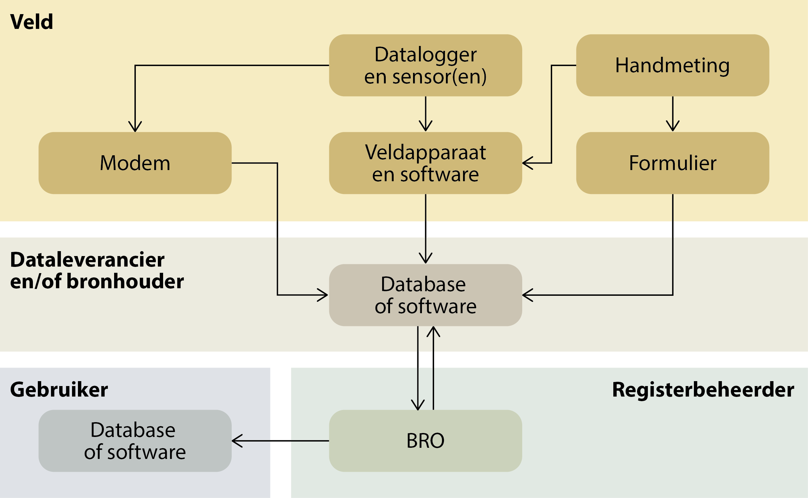
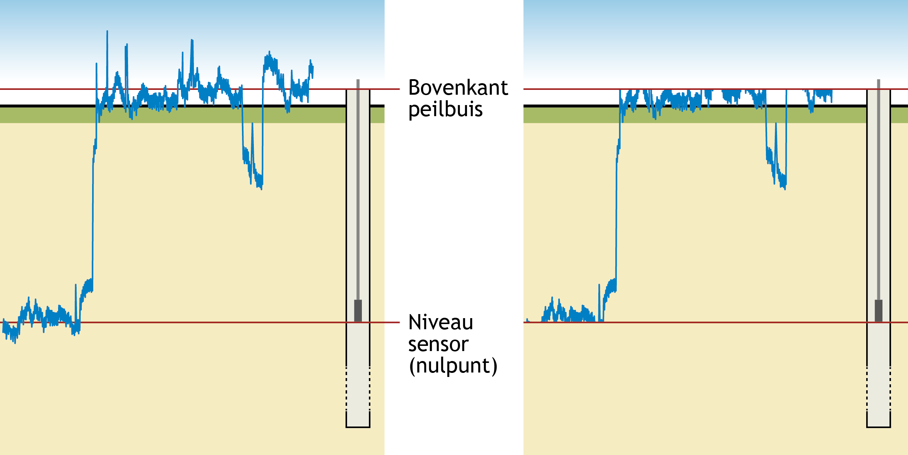
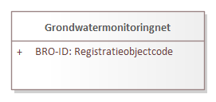

Creative Commons Attribution 4.0 International Public License (CC-BY)
Samenvatting
Samenvatting van informatiemodel.
Status van dit document
Deze paragraaf beschrijft de status van dit document ten tijde van publicatie. Het is mogelijk dat er actuelere versies van dit document bestaan. Een lijst van Geonovum publicaties en de laatste gepubliceerde versie van dit document zijn te vinden op https://www.geonovum.nl/geo-standaarden/alle-standaarden.
Dit is een door de werkgroep goedgekeurde consultatieversie. Commentaar over dit document kan gestuurd worden naar
geo-standaarden@geonovum.nl.
1. Inleiding
Dit onderdeel is niet normatief.
1.1 Doel en doelgroep
In de basisregistratie ondergrond (BRO) wordt een aantal typen gegevens geregistreerd, de registratieobjecten.
Een catalogus is de gegevensdefinitie van een registratieobject en beschrijft welke gegevens van het object in de BRO zijn opgeslagen.
Het document is bedoeld voor alle gebruikers van de BRO en moet duidelijk maken welke gegevens er precies in het systeem zitten.
Aan aanleverende partijen moet het vertellen welke gegevens in de basisregistratie ondergrond moeten komen en aan welke eisen die moeten
voldoen, en aan afnemende partijen welke gegevens zij in de basisregistratie ondergrond mogen verwachten.
Het document is voor een breed publiek bedoeld en de informatie moet naast precies ook begrijpelijk zijn.
1.2 Totstandkoming
Een catalogus is het resultaat van een proces van standaardisatie dat geruime tijd in beslag kan nemen. De standaardisatie is een open proces waarin de belanghebbende partijen actief betrokken worden. Het eindresultaat wordt door de wetgever vastgesteld in een ministeriële regeling.
In bepaalde gevallen is de verscheidenheid aan gegevens van een object zo groot, dat er eerst deelverzamelingen worden gedefinieerd. Het standaardisatieproces wordt dan per deelverzameling doorlopen. De deelverzamelingen worden zo gekozen dat de gegevens die in de bijbehorende catalogus worden beschreven, direct na vaststelling aan de BRO kunnen worden aangeleverd. Wanneer er deelverzamelingen worden onderscheiden, komt de catalogus van het registratieobject dus gefaseerd tot stand. Omdat inzichten in de loop van de tijd kunnen wijzigen kan het aan het eind van het hele proces nodig blijken revisies door te voeren om ongewenste verschillen tussen deelverzamelingen weg te nemen.
1.3 Beheer
Een vastgestelde catalogus wordt met het daarbij horende deel van het systeem van de basisregistratie ondergrond in gebruik genomen.
De eerste formeel vastgestelde catalogus krijgt het versienummer 1.0. Verwacht mag worden dat er na enige tijd behoefte gaat ontstaan aan gegevens die nog niet in de catalogus zijn opgenomen.
Het versiebeheer van de catalogus moet nog worden ingericht.
1.4 Leeswijzer
Hoofdstuk 1 geeft het doel en de doelgroep van een catalogus.
Hoofdstuk 2 behandelt enkele algemene aspecten van het BRO-systeem en begrippen van algemene aard.
Hoofdstuk 3 plaatst het object in de gegevenssystematiek van de basisregistratie ondergrond en vertelt wat de benadering is geweest bij het opstellen van de gegevensdefinitie.
Hoofdstuk 4 vertelt hoe de catalogus is opgebouwd en welke aspecten van de gegevens daarin worden beschreven.
Hoofdstuk 5 geeft de inhoud weer van het eerste artikel van de ministeriële regeling en dat is het deel waarin de definitie is opgenomen van het registratieobject, van de delen waaruit het is opgebouwd, de entiteiten, en van de eigenschappen van die delen, de attributen.
2. Algemene kenmerken en begrippen
Dit onderdeel is niet normatief.
2.1 Opzet van de landelijke voorziening
De landelijke voorziening van de basisregistratie ondergrond is een systeem dat een schakel vormt in een informatieketen. Aan het begin van de keten staan bestuursorganen die opdracht geven tot de productie van gegevens, of zelf gegevens produceren. Die bestuursorganen worden bronhouders genoemd. De geproduceerde gegevens worden door een dataleverancier geleverd aan de beheerder van het systeem, de registerbeheerder. De bronhouder is verantwoordelijk voor de levering van gegevens. Hij kan besluiten zelf dataleverancier te zijn of andere partijen een machtiging voor levering te verlenen. De beheerder van de landelijke voorziening van de BRO registreert de aangeleverde gegevens en levert ze voor (her)gebruik door aan allerlei afnemers.
De opzet van het systeem moet begrepen worden vanuit de verantwoordelijkheden die in de keten zijn belegd. De aangeleverde gegevens vallen onder de verantwoordelijkheid van de bronhouder en de registerbeheerder mag die gegevens niet veranderen. De registerbeheerder moet echter wel gegevens toevoegen om het systeem te kunnen beheren en hij kan gegevens toevoegen om de afnemers goed van dienst te kunnen zijn.
Bij wet is geregeld dat de basisregistratie ondergrond zo wordt opgezet dat er onderscheid bestaat tussen de gegevens die aan de registerbeheerder zijn aangeleverd en de gegevens die de registerbeheerder aan de afnemers verstrekt. Het systeem valt uiteen in twee grote deelsystemen, het register brondocumenten ondergrond en de registratie
ondergrond (zie figuur 1).
Een geheel van gegevens dat door of onder verantwoordelijkheid van een bronhouder wordt aangeleverd, wordt een brondocument genoemd. De brondocumenten worden in het register brondocumenten ondergrond opgeslagen. De gegevens uit de brondocumenten worden samen met de gegevens die de registerbeheerder toevoegt in de registratie ondergrond vastgelegd. De registratie ondergrond is het deelsysteem dat gebruikt wordt voor uitgifte.
Figuur 1De twee grote deelsystemen van de landelijke voorziening van de BRO.
Met deze opzet verkrijgt het systeem de nodige flexibiliteit. Zo kan een object in de registratie ondergrond gegevens bevatten die uit meer dan één brondocument afkomstig zijn en bij uitgifte kunnen gegevens van verschillende objecten met elkaar gecombineerd worden. Ook is het mogelijk met het brondocument gegevens op te slaan die alleen voor de bronhouder en de aanleverende partij van belang zijn.
De catalogus dekt alle gegevens die opgenomen zijn in de registratie ondergrond. Verreweg de meeste gegevens komen uit de brondocumenten die de dataleverancier aanlevert en een paar gegevens komen voort uit de overdracht van een brondocument aan de registerbeheerder. Aan de aangeleverde gegevens worden enkele gegevens door de registerbeheerder toegevoegd. Als een gegeven is toegevoegd door de BRO wordt dat in de beschrijving expliciet vermeld.
Alle gegevens in de registratie ondergrond worden uitgegeven, maar niet alle afnemers kunnen alle gegevens geleverd krijgen. De gegevens die niet aan alle afnemers worden uitgeleverd zijn de gegevens die alleen nodig zijn in de communicatie tussen de registerbeheerder enerzijds en de dataleveranciers en bronhouders anderzijds.
2.2 Registratieobject
Het registratieobject is dé eenheid in de data-architectuur van de basisregistratie ondergrond. Voor de registerbeheerder is het de elementaire bouwsteen van het systeem dat hij moet beheren.
Een registratieobject verwijst naar een eenheid van informatie die onder de verantwoordelijkheid van één bronhouder valt en die met een bepaald doel is of wordt gemaakt. Het is in directe of indirecte zin gedefinieerd in de ruimte en dat wil zeggen dat een registratieobject een plaats op het aardoppervlak heeft of dat het gekoppeld is aan een ander type registratieobject met een plaats op het aardoppervlak.
Een registratieobject is niet alleen in de ruimte maar ook in de tijd gedefinieerd. Het leven van een registratieobject begint op het moment dat de gegevens zijn geregistreerd en dat is zo kort mogelijk nadat de gegevens zijn geproduceerd. De levensduur van een registratieobject, en de veranderlijkheid van de gegevens verschilt van object tot object. Een grondwatermonitoringput kan tientallen jaren gebruikt worden voor het meten van grondwaterstanden en in de periode kunnen er nieuwe gegevens ontstaan. Dat betekent dat de gegevens van de put in de registratie ondergrond gedurende zijn hele levensduur bijgewerkt moeten kunnen worden. Aan de andere kant van het spectrum staan de objecten waarvan alle gegevens in een keer worden vastgelegd. Geotechnisch sondeeronderzoek is daar een voorbeeld van. Sondeeronderzoek is eenmalig onderzoek en het resultaat ervan kan al na een of enkele dagen aan de bronhouder worden overhandigd.
2.3 Registratiedomein
Registratieobjecten worden in de basisregistratie ondergrond gegroepeerd in domeinen. Vooralsnog worden zes domeinen onderscheiden:
bodem- en grondonderzoek
bodemkwaliteit
grondwatermonitoring
grondwatergebruik
mijnbouwwet
modellen.
De domeinen zijn vanuit het oogpunt van beheer van belang voor de ordening van het systeem. Daarnaast zijn zij nuttig in de communicatie met de partijen die bij de realisatie van het systeem betrokken zijn.
2.4 Kwaliteitsregime
In de basisregistratie ondergrond worden niet alleen gegevens geregistreerd die dateren van na de datum waarop de wet van kracht is geworden. Ook oudere gegevens zullen in de basisregistratie ondergrond worden opgenomen. De noodzaak daartoe ligt in de wet verankerd. Die schrijft voor dat de gegevens uit de eerder bestaande systemen DINO en BIS zo veel mogelijk naar de BRO moeten worden overgezet. Verder staat de wet toe dat bronhouders tot vijf jaar na de inwerkingtreding van de wet historische gegevens ter registratie mogen aanbieden.
Historische gegevens kunnen niet altijd voldoen aan de strikte regels die de BRO stelt. Zo kan het voorkomen dat voor gegevens die volgens de strikte regels van de BRO verplicht zijn, geen waarde bekend is. Om de verwerking van de twee categorieën gegevens naast elkaar mogelijk te maken, worden twee kwaliteitsregimes gehanteerd. Voor de aanlevering van gegevens volgens de strikte regels geldt het IMBRO-regime. Bij de aanlevering van historische gegevens wordt geaccepteerd dat een aantal formeel verplichte gegevens geen waarde heeft. Voor deze gegevens wordt het IMBRO/A-regime gehanteerd en dat kent dus minder strikte regels.
De introductie van de twee kwaliteitsregimes geeft de bronhouder gedurende een bepaalde periode een zekere mate van vrijheid. Het kan bijvoorbeeld praktisch blijken het IMBRO/A-regime te hanteren voor gegevens die weliswaar pas na de datum waarop de wet in werking is getreden zijn geproduceerd maar die voortkomen uit opdrachten die al voor die datum zijn gegeven. Ook kan het voorkomen dat historische gegevens wel aan alle strikte voorwaarden voldoen en dan is het wenselijk de gegevens onder IMBRO-regime aan te leveren.
De periode waarin de bronhouders die vrijheid hebben wordt de transitieperiode genoemd. Over de duur van de transitieperiode zijn nog geen afspraken gemaakt. Na afloop van de transitieperiode kan alleen onder het strikte IMBRO-regime worden aangeleverd.
2.5 Formele en materiële geschiedenis
De basisregistratie ondergrond maakt deel uit van een stelsel van basisregistraties. Binnen het stelsel maakt men onderscheid tussen de materiële geschiedenis en de formele geschiedenis van een object.
Het begrip materiële geschiedenis wordt gebruikt om de veranderingen van eigenschappen van een object in de werkelijkheid aan te duiden. De materiële geschiedenis van een object wordt, voor zover relevant, in de registratie ondergrond vastgelegd. Niet alle registratieobjecten hebben een materiële geschiedenis, alleen de objecten met een levensduur, zoals de grondwatermonitoringput.
Het begrip formele geschiedenis wordt gebruikt voor de veranderingen van eigenschappen van een object in de registratie zelf. De meeste van die veranderingen gaan terug op een verandering van eigenschappen in de werkelijkheid, en de formele geschiedenis geeft aan wanneer de veranderingen in het systeem geregistreerd zijn. De formele geschiedenis kent ook gebeurtenissen die niet het gevolg zijn van een verandering in de werkelijke eigenschappen van een object. Die gebeurtenissen hebben betrekking op correcties. Het kan gebeuren dat een bronhouder erachter komt dat er een onjuiste waarde was geregistreerd en dan zorgt hij ervoor dat die verbeterd wordt. De registratie van de verbetering is een formele gebeurtenis.
Alle registratieobjecten hebben een formele geschiedenis en die wordt in de registratie ondergrond globaal vastgelegd in de registratiegeschiedenis van het object. Globaal wil zeggen dat de registratie ondergrond alleen een overzicht van de formele geschiedenis geeft. Voor de details moet het register brondocumenten ondergrond worden geraadpleegd.
Bij correctie wordt het betreffende gegeven in de registratie ondergrond overschreven en is de oude waarde van het gegeven niet meer direct beschikbaar voor de afnemers.
Zou een afnemer toch willen weten wat de eerdere foute waarde was, dan moet hij het register brondocumenten ondergrond raadplegen.
2.6 Coördinaten en referentiestelsels
De registratieobjecten van de basisregistratie ondergrond zijn gedefinieerd in de ruimte en dat wil zeggen dat een object zelf een plaats op het aardoppervlak, een locatie, heeft, of dat het gekoppeld is aan een ander type registratieobject met een locatie. Afhankelijk van het type registratieobject, wordt de locatie geregistreerd als een punt, een lijn of een vlak.
De locatie is de horizontale positie van een object. Voor bepaalde objecten is het voldoende dat alleen die horizontale positie wordt vastgelegd, maar voor veel objecten is ook de verticale positie van belang.
Posities worden vastgelegd in coördinaten en die zijn gedefinieerd in een bepaald referentiestelsel.
Er zijn verschillende typen referentiestelsels. Zo spreekt men van horizontale referentiestelsels (2D), verticale referentiestelsels (1D), gecombineerde referentiestelsels (2D, 1D) en werkelijke 3D referentiestelsels. In Nederland worden de horizontale en de verticale component van een positie in een afzonderlijk stelsel uitgedrukt. Het is vandaag de dag mogelijk met gps een positie in een 3D-referentiestelsel vast te leggen, maar de wens over te stappen op het gebruik van 3D is nog door geen van de partijen die betrokken zijn bij de basisregistratie ondergrond naar voren gebracht.
2.6.1 Referentiestelsels voor de horizontale positie
In Nederland zijn traditioneel verschillende referentiestelsels voor de horizontale positie in gebruik. In 2009, bij de eerste voorbereidingen voor de totstandkoming van de basisregistratie ondergrond, is al vastgesteld dat de verscheidenheid aan referentiestelsels de basisregistratie ondergrond voor problemen stelt omdat de registratie dan niet gemakkelijk op een eenduidige manier bevraagd kan worden. In de registratie ondergrond worden namelijk zowel gegevens met een locatie op land als gegevens met een locatie op zee geregistreerd. In de toenmalige praktijk werden op land en op zee verschillende stelsels gebruikt. Op land werd RD gebruikt en op zee waren verschillende stelsels in gebruik, waarvan WGS84 de belangrijkste was.
In 2009 was ook al bekend dat de Europese kaderrichtlijn INSPIRE de lidstaten vraagt de gegevens in Europa in één referentiestelsel uit te gaan wisselen, te weten in ETRS89. Met dat in gedachten, is het besluit genomen het BRO-systeem zo in te richten dat de registratie bevraagd gaat worden in ETRS89.
Het besluit wordt ondersteund door ontwikkelingen in Nederland. Sinds 2013 wordt er door de drie belangrijkste autoriteiten in Nederland op het gebied van referentiestelsels, het Kadaster, de Dienst der Hydrografie en Rijkswaterstaat, gewerkt aan de totstandkoming van nieuwe afspraken. Die afspraken moeten in lijn zijn met Europese afspraken en leiden tot heldere en eenduidige transformatieprocedures tussen referentiestelsels. Concreet betekent dit dat in Nederland op termijn het ETRS89-stelsel als standaard zal worden gehanteerd voor het uitwisselen van geo-informatie.
Het besluit betekent niet dat de gegevens ook in ETRS89 aangeleverd moeten worden. De basisregistratie ondergrond voorziet een periode van transitie waarin de aanleverende partijen zelf bepalen wanneer zij overstappen op ETRS89. Die periode zal naar verwachting jaren duren. Om de transitie te ondersteunen hanteert de basisregistratie ondergrond de volgende spelregels:
Gegevens mogen in een beperkt aantal referentiestelsels worden aangeleverd (RD, WGS84 en ETRS89).
Voor locaties op land wordt alleen RD of ETRS89 toegestaan.
Voor locaties op zee wordt alleen WGS84 of ETRS89 toegestaan.
De aangeleverde coördinaten worden in de registratie opgeslagen.
De aangeleverde coördinaten worden door de basisregistratie ondergrond getransformeerd naar
het ETRS89 referentiestelsel.
De getransformeerde coördinaten worden naast de aangeleverde coördinaten opgeslagen.
Bij de getransformeerde coördinaten wordt ook een identificatie van de gebruikte transformatiemethode opgeslagen.
Als de coördinaten in ETRS89 zijn aangeleverd, dan staat bij aangeleverde en getransformeerde positie dezelfde
informatie. Voor de locatie worden de getransformeerde coördinaten en de aangeleverde coördinaten beide
aan de afnemers verstrekt.
2.6.2 Referentiestelsels voor de verticale positie
In Nederland zijn voor verticale posities op land en zee verschillende referentiestelsels in gebruik. Op land wordt NAP gebruikt. Op zee is het in de voor de BRO relevante werkvelden gebruikelijk posities uit te drukken t.o.v. het gemiddeld zeeniveau (MSL, Mean Sea Level), maar posities t.o.v. LAT komen ook voor (Lowest Astronomical Tide). Dit laatstgenoemde stelsel wordt in de kaderrichtlijn INSPIRE genoemd als het stelsel van voorkeur voor het uitdrukken van verticale posities op zee. De basisregistratie ondergrond staat daarom op zee het gebruik van LAT naast MSL toe. Aangeleverde verticale posities worden door de BRO niet getransformeerd.
2.7 Gegevens op land en op zee
De basisregistratie ondergrond bevat gegevens over de ondergrond van Nederland en zijn zgn. Exclusieve Economische Zone (EEZ). De EEZ is het gebied op de Noordzee waar Nederland economische rechten heeft. Voor de referentiestelsels die bij aanlevering worden toegestaan, is het van belang te weten of de locatie van een object op zee of op land ligt.
Als scheidingslijn tussen land en zee wordt in de basisregistratie ondergrond de UNCLOS-basislijn gehanteerd. Het beheer van de basislijn valt onder de verantwoordelijkheid van de Dienst der Hydrografie van het ministerie van Defensie. Deze dienst voert die taak uit op basis van het Zeerechtverdrag van de Verenigde Naties uit 1982, dat in het Engels de United Nations Convention on the Law of the Sea (UNCLOS) heet.
De basislijn is opgebouwd uit de nulmeterdieptelijn zoals weergegeven op de zeekaarten en enkele rechte basislijnen die onder meer de monding van de Westerschelde en de wateren tussen de Waddeneilanden afsluiten.
De grens tussen land en zee is veranderlijk. De Dienst der Hydrografie stelt de grens opnieuw vast wanneer daartoe voldoende aanleiding is. De BRO hanteert bij inname de meest recente versie van de UNCLOS-basislijn en controleert daarmee of de juiste referentiestelsels gebruikt worden.
Tussen het moment waarop de locatie van een object wordt bepaald en het moment waarop het gegeven in de basisregistratie ondergrond wordt vastgelegd verloopt enige tijd. In die periode kan de positie van de UNCLOS-basislijn opnieuw zijn vastgesteld, en dan ontstaat er een discrepantie die bij het aanleveren van gegevens tot problemen kan leiden. Wanneer een dergelijk probleem zich voordoet, wordt de dataleverancier gevraagd contact op te nemen met de registratiebeheerder om gezamenlijk tot een oplossing te komen.
Een soortgelijk probleem doet zich voor met betrekking tot de begrenzing van Nederland, met name van het Nederlands territoir. De grenzen van Nederland worden ieder jaar op 1 januari vastgesteld door het Kadaster en vastgelegd in de basisregistratie kadaster. De BRO controleert bij inname of een object in het gebied ligt dat Nederland en zijn Exclusieve Economische Zone omvat, en hanteert daarbij de actuele grenzen. Ook bij problemen die te herleiden zijn tot een verandering in de begrenzing van Nederland, wordt de dataleverancier gevraagd contact op te nemen met de registratiebeheerder om gezamenlijk tot een oplossing te komen.
2.8 Nauwkeurigheid van meetwaarden
Voor zinvol gebruik van gegevens met een gemeten, berekende of anderszins bepaalde waarde is het noodzakelijk dat de nauwkeurigheid van die gegevens bekend is.
Het begrip nauwkeurigheid laat zich in deze context het best omschrijven als de juistheid van een gemeten of berekende waarde. In de meeste processen waarin de waarde van een gegeven wordt bepaald, kan de afwijking van de daadwerkelijke waarde slechts via een kalibratie- of statistisch proces worden verkregen. Het resultaat omvat dan niet alleen een van de mogelijke realisaties van een meetwaarde maar ook informatie over de mogelijke spreiding van de meetwaarden.
De basisregistratie ondergrond gaat ervan uit dat de producenten van gegevens de metingen en berekeningen uitvoeren binnen een stelsel van afspraken dat binnen het desbetreffende werkveld is vastgelegd. Uitgangspunt is dat ook de eisen waaraan de gegevens op het gebied van nauwkeurigheid moeten voldoen in afspraken zijn vastgelegd. Dat kunnen praktische werkafspraken zijn, maar ook afspraken die vertaald zijn naar ISO- en NEN-normen. In de catalogus wordt in beginsel verwezen naar die normen. Waar deze normen niet voorzien in afspraken over de nauwkeurigheid, stelt de basisregistratie ondergrond hieraan specifieke eisen. Deze zijn dan vermeld in de catalogus.
2.9 Authentiek gegeven
In de wet is een aantal gegevens expliciet als authentiek aangeduid. Dit wordt in de catalogus nader uitgewerkt; verreweg de meeste gegevens zijn authentiek.
Met de aanduiding authentiek wordt, zoals geformuleerd in de memorie van toelichting op de wet, tot uitdrukking gebracht dat:
Het gegeven in samenhang met andere gegevens door een groot aantal bestuursorganen in verschillende processen wordt gebruikt en derhalve bestemd is voor informatie-uitwisseling tussen bestuursorganen;
de verantwoordelijkheid voor betrouwbaarheid van het gegeven eenduidig geregeld is;
het gegeven onderworpen is aan intern en extern kwaliteitsonderzoek, en
het gegeven zich leent voor verplicht gebruik door bestuursorganen en eenmalige verstrekking door burgers en bedrijven aan de overheid.
In de praktijk mag een gebruiker van de gegevens ervan uitgaan dat alle gegevens correct zijn. De catalogus moet de gebruiker alle informatie geven die voor een goed begrip daarvan nodig is.
Heeft een gebruiker echter gerede twijfel over de juistheid van een authentiek gegeven dan wordt verwacht dat hij de registerbeheerder daarvan op de hoogte brengt. Bestuursorganen zijn, bij gerede twijfel over de juistheid van een authentiek gegeven (of het ontbreken ervan), zelfs verplicht daarvan melding te maken.
Voor alle gegevens is aangegeven of ze authentiek zijn. Ook is voor alle gegevens aangegeven of ze aanwezig moeten zijn en een waarde moeten hebben. Dat laat zien dat er gegevens kunnen zijn die authentiek zijn maar geen waarde hoeven te hebben. Juist omdat er verplichtingen gelden t.a.v. authentieke gegevens, vraagt dit om een korte toelichting.
Wanneer een authentiek gegeven geen waarde heeft moet de gebruiker ervan uitgaan dat het gegeven niet is geproduceerd. Dat geval kan zich uiteraard alleen voordoen wanneer er vrijheid van beslissen bestaat bij de bronhouder of de producent.
Voor de duidelijkheid, als er wel een waarde is dan moet die ook in de BRO worden opgenomen. Bij gerede twijfel over het ontbreken van een waarde, moet een bestuursorgaan dat melden.
3. Grondwaterstandonderzoek
3.1 Grondwatermonitoring
Grondwater is een belangrijke bestaansbron. Het grondwater wordt daarom in Nederland in de gaten gehouden en beheerd. Het beheer van het grondwater richt zich op de hoeveelheid grondwater en de kwaliteit ervan. Om dit beheer goed te kunnen uitvoeren, wordt in Nederland de toestand van het grondwater over langere tijd gevolgd. Dat heet grondwatermonitoring. Er wordt daarbij gekeken naar de grondwaterstand (kwantiteit), en naar de samenstelling van het grondwater (kwaliteit). Hiervoor worden periodiek grondwaterstandonderzoeken en grondwatersamenstellingsonderzoeken uitgevoerd. Door het verzamelen van deze meetgegevens over ons grondwatersysteem kunnen trends worden gesignaleerd en kan getoetst en gerapporteerd worden of we voldoen aan (inter)nationale normen en streefbeelden.
In het domein grondwatermonitoring staan de grondwatermonitoringnetten centraal die zijn ingesteld om het grondwater in Nederland te kunnen beheren. Het doel waarvoor een monitoringnet is ingesteld, het monitoringdoel, beperkt zich in veel gevallen tot kwantiteit of kwaliteit, maar het komt ook voor dat onderzoek aan zowel de kwantiteit als de kwaliteit wordt gedaan binnen hetzelfde grondwatermonitoringnet.
Grondwatermonitoring houdt in dat de toestand van het grondwater in een bepaald gebied, of eigenlijk in een bepaald deel van de ondergrond, over langere tijd gevolgd wordt. De grootte van het gebied en de diepte van monitoring verschillen per grondwatermonitoringnet. Ook de duur van monitoring wisselt sterk.
In het Besluit basisregistratie ondergrond is omschreven welke vormen van monitoring onder deze basisregistratie vallen. Het belangrijkste criterium is het type organisatie dat verantwoordelijk is voor het beheer van het grondwater: de grondwatermonitoring moet door of in opdracht van een bestuursorgaan, de bronhouder, worden uitgevoerd. Verder is er een beperking aan de tijdschaal gesteld. Wanneer een monitoringnet is ingesteld om de toestand van het grondwater over een periode van ten minste één jaar te volgen, dan valt het altijd onder de basisregistratie ondergrond. Voor monitoringnetten met een kortere duur maakt het bestuursorgaan zelf de afweging of de gegevens in de basisregistratie moeten worden opgenomen. De periode van een jaar is lang genoeg voor het uitfilteren van de effecten van kleinschalige en kortdurende invloeden, zodat de informatie die in de basisregistratie wordt vastgelegd blijvende gebruikswaarde heeft. Aan de ruimtelijke schaal van monitoring zijn voor de basisregistratie ondergrond geen grenzen gesteld, afgezien van het feit dat voor de gehele basisregistratie ondergrond geldt dat het gegevens bevat over de ondergrond van Nederland en zijn Exclusieve Economische Zone (EEZ). De EEZ is het gebied op de Noordzee waar Nederland economische rechten heeft.
In de Regels omtrent de basisregistratie ondergrond en het Besluit basisregistratie ondergrond staat dat de BRO “voorlopig” respectievelijk “vooralsnog” geen milieukwaliteitsinformatie bevat. Voor het grondwatermonitoringdomein zijn grondwatersamenstellingsonderzoeksgegevens uit monitoringnetten rondom milieu-hygiënische projecten, waarin het met name gaat om het monitoren van de verontreiniging van de bodem en het grondwater, daarmee voorlopig buiten scope geplaatst. Op 18 december 2018 is in de Tweede kamer een motie aangenomen waarin de regering wordt verzocht ‘om informatie over bodemverontreiniging in de basisregistratie ondergrond op te nemen’ (Kamerstuk Motie 34864-19). Momenteel is nog niet bekend wat de gevolgen van deze motie zullen zijn voor de scope van grondwaterstandonderzoek.
De bestuursorganen die langdurig het grondwater (laten) monitoren op grondwaterkwantiteit, omdat zij daarin een wettelijke taak hebben, zijn Rijksoverheidsorganisaties (Rijkswaterstaat, Ministerie van Defensie), Provincies, Waterschappen, Gemeentes en bestuurlijke samenwerkingsverbanden. Daarnaast zijn er (semi)private organisaties die vanuit vergunningsplicht het grondwater langdurig monitoren op grondwaterkwantiteit, in opdracht van bevoegd gezag. Dit zijn bijvoorbeeld Gasunie, Prorail, drinkwaterbedrijven, grondwateronttrekkende industrie, (ondiepe) bodemenergie-exploitanten (bedrijven, ziekenhuizen, overige instellingen), natuurterreinbeheerorganisaties en exploitanten van ondiepe minerale delfstoffen. Deze organisaties doen periodiek grondwaterstandonderzoek en hebben daarvoor grondwatermonitoringnetten en meetplannen.
In de voorliggende catalogus gaat het over het registratieobject grondwaterstandonderzoek.
In de technische landelijke voorziening van de basisregistratie ondergrond worden Engelstalige benamingen gehanteerd voor de registratieobjecten. Omwille van de aansluiting hiermee worden voor de registratieobjecten Engelstalige afkortingen gebruikt. In deze catalogus worden alleen de Engelstalige afkortingen en verder de Nederlandstalige termen gebruiken.
Grondwatermonitoringnet wordt afgekort tot GMN (Groundwater Monitoring Network);
Grondwatermonitoringput wordt afgekort tot GMW (Groundwater Monitoring Well);
Grondwatersamenstellingsonderzoek wordt afgekort tot GAR (Groundwater Analysis Report);
Grondwaterstandonderzoek wordt afgekort tot GLD (Groundwater Level Dossier).
Figuur 2De samenhang tussen de vier registratieobjecten binnen het grondwatermonitoring domein.
Een grondwatermonitoringput betreft de constructie die gebruikt wordt om standen en/of de samenstelling van het grondwater te meten. Gewoonlijk bestaat een put uit een samenstel van buizen dat aan het oppervlak wordt beschermd tegen invloeden van buitenaf. Via de buizen wordt het grondwater dat zich op een bepaalde diepte bevindt ontsloten. Het deel van de buis waardoor het grondwater de buis binnen kan komen is het filter. Elke buis heeft één filter. Een filter fungeert als meetpunt in de basisregistratie ondergrond. Informatie over grondwatermonitoringput is beschreven in de Catalogus Grondwatermonitoringput.
Binnen het grondwaterdomein in de basisregistratie ondergrond kent alleen de grondwatermonitoringput een fysieke locatie. De drie andere registratieobjecten zijn aan het registratieobject grondwatermonitoringput gekoppeld en hebben daarmee indirect een locatie. Bij grondwaterstandonderzoeken en grondwatersamenstellingsonderzoeken ligt de verwijzing vast naar het filter in de grondwatermonitoringput waarin het onderzoek is uitgevoerd. Daarnaast ligt bij grondwaterstandonderzoeken en grondwatersamenstellingsonderzoeken de verwijzing vast naar één of meerdere grondwatermonitoringnetten ten behoeve waarvan het onderzoek is uitgevoerd.
Een grondwatermonitoringnet is een verzameling locaties waar, voor een bepaald monitoringdoel met een bepaald wettelijk kader, periodiek onderzoek aan het grondwater op een bepaalde diepte wordt gedaan om de toestand van het grondwater te kunnen bepalen en de eventuele veranderingen erin te kunnen volgen. Het grondwatermonitoringnet weerspiegelt de groepering van onderzoeksgegevens door de bronhouder op basis van het doel van de monitoring. Het registratieobject vergroot daarmee de hergebruikswaarde voor afnemers van de gegevens van de basisregistratie ondergrond. Informatie over grondwatermonitoringnet is beschreven in de Catalogus Grondwatermonitoringnet.
Een grondwatermonitoringnet valt onder de verantwoordelijkheid van één bronhouder en heeft een vastgesteld monitoringdoel. In de praktijk komt het voor dat een grondwaterstandonderzoek ten behoeve van meer dan één doel wordt uitgevoerd. Een bronhouder kan bijvoorbeeld omwille van de efficiëntie besluiten om een grondwaterstandonderzoek te laten doen, en de resultaten ervan zowel voor de Kaderrichtlijn Waterverplichtingen als voor een eigen monitoringdoel te gebruiken. Omdat er voor afzonderlijke monitoringdoelen verschillende grondwatermonitoringnetten zijn, betekent dit voor de basisregistratie ondergrond dat grondwaterstand- en grondwatersamenstellingsonderzoek kunnen toebehoren aan één of meerdere grondwatermonitoringnetten.
Een grondwaterstandonderzoek kan ook worden uitgevoerd ten behoeve van meerdere doelen van verschillende bestuursorganen. In dat geval is één van deze bestuursorganen de bronhouder van het grondwaterstandonderzoek. Deze bronhouder levert het grondwaterstandonderzoek aan de basisregistratie ondergrond aan, inclusief de koppeling aan alle grondwatermonitoringnetten waarvoor het onderzoek is uitgevoerd. De bronhouder is daarmee dus ook verantwoordelijk voor de koppeling van het grondwaterstandonderzoek aan een grondwatermonitoringnet van een ander bestuursorgaan. Hierover dienen beide partijen onderlinge afspraken te maken.
3.3 Het grondwaterstandonderzoek
3.3.1 Inleiding
Een Grondwaterstandonderzoek (GLD) is een monitoringactiviteit, waarbij herhaaldelijk de waterstand in een monitoringbuis van een grondwatermonitoringput wordt gemeten. Een filter van een monitoringbuis in een grondwatermonitoringput vormt een meetpunt in registratieobject grondwatermonitoringnet (zie § 3.2Domein grondwatermonitoring in de BRO). Het grondwaterstandonderzoek wordt verricht door een bronhouder of door derden, op basis van een opdracht van of afspraak met die bronhouder, en komt voort uit een of meerdere monitoringdoelen. Het resultaat van het grondwaterstandonderzoek omvat de beoordeelde metingen in de tijd-meetwaardereeks die hieruit volgt. De resultaten van het onderzoek worden geregistreerd in de basisregistratie ondergrond.
In tegenstelling tot de relatief langzame verandering van de samenstelling van het grondwater, kunnen de fluctuaties van de grondwaterstand en/of stijghoogte snel optreden. Dit wordt bijvoorbeeld veroorzaakt door neerslag, invloed van getij, seizoenen en/of menselijk handelen. Van oudsher worden handpeilingen veelal met een frequentie van eens per 14 dagen uitgevoerd. Sinds de intrede van (druk)sensoren kan de waterstand in de monitoringbuis met een aanzienlijk hogere frequentie worden gemeten.
De snelheid waarmee gegevens van grondwaterstanden beschikbaar komen hangt af van de toegepaste systemen. Voor een handpeiling is het duidelijk dat een veldbezoek noodzakelijk is, maar ook voor veel meetsystemen met een (druk)sensor is een veldbezoek noodzakelijk om de aan de (druk)sensor gekoppelde datalogger uit te lezen. Pas na het uitgevoerde veldbezoek komen dan de gegevens beschikbaar voor verdere verwerking.
Steeds vaker worden systemen toegepast waarbij de datalogger gekoppeld is aan een modem, waarbij de gegevens direct aan de dataleverancier of bronhouder worden verstuurd. Dit gebeurt via een draadloos netwerk zoals het GSM- of het LoRa-netwerk. LoRa is een Long Range, Low Power verbinding speciaal ontwikkeld om kleine hoeveelheden informatie uit te wisselen tussen objecten en systemen. Deze wijze van beschikbaar komen van data wordt hieronder als telemetrie beschreven.
3.3.2 Het proces
Het proces waarin grondwaterstandonderzoeksgegevens in de praktijk ontstaan is schematisch weergegeven in de onderstaande figuur en wordt daaronder beschreven. Daarbij wordt benadrukt dat de precieze invulling van de processtappen in de praktijk vaak afhankelijk is van het gebruiksdoel en het toepassingsgebied van de monitoring. Het komt ook voor dat niet alle beschreven stappen worden doorlopen. De figuur geeft het volledige proces, van vaststellen van de doelstelling tot en met registratie in de basisregistratie ondergrond. In deze catalogus beschrijven we alleen de onderdelen meten, omrekenen, controleren, corrigeren en keuren. Het samenhangend geheel van de processtappen controleren, corrigeren en keuren wordt in dit document ook ‘beoordelen’ genoemd.
Figuur 3De stappen in het bewerkingsproces, vanaf de originele meting tot aan de definitieve gegevens.
Meten
Het meten van de waterstand in de monitoringbuis betreft de wijze waarop de fysieke meting in de grondwatermonitoringput wordt uitgevoerd. De meting kan worden uitgevoerd met bijvoorbeeld een meetlint of een sensor. Er zijn drie mogelijke stromen van grondwaterstandgegevens naar de bronhouder (zie figuur 4). Het onderscheid daartussen wordt gevormd door de meetfrequentie en/of periodiciteit van het beschikbaar komen van de meting. Binnen een grondwaterstandonderzoek kunnen de verschillende gegevensstromen naast elkaar voorkomen.
De drie gegevensstromen die worden onderscheiden zijn afkomstig van (zie onderstaande figuur):
relatief laagfrequent uitgevoerde handpeilingen;
relatief hoogfrequente sensormetingen, waarbij de meetgegevens opgeslagen worden in een datalogger die in of rond de monitoringbuis aanwezig is;
relatief hoogfrequente sensormetingen, waarbij de meetgegevens via telemetrie naar de bronhouder/leverancier worden gestuurd.

Figuur 4Stroomschema van grondwaterstandgegevens, vanaf de monitoringbuis en meetinstrumenten in het veld, via de database of software van de dataleverancier of bronhouder naar de BRO (naar KWR, 2018).
De handpeiling betreft een meting van de grondwaterstand die tijdens het veldbezoek wordt uitgevoerd. De meting wordt bijvoorbeeld uitgevoerd met een meetlint met analoog of elektronisch peilklokje of met een akoestische sensor. In het laatste geval wordt de reistijd tot de waterspiegel in de monitoringbuis gemeten, die omgerekend dient te worden naar de waterstand in de monitoringbuis (zie stap 2). Per veldbezoek komt hierbij slechts een enkele meetwaarde per monitoringbuis beschikbaar. De handpeiling kan fungeren als controlemeting van sensormetingen, zoals hieronder beschreven.
De grootheid die met sensoren wordt gemeten, is afhankelijk van het type: bij druksensoren wordt de druk van de water- en/of luchtkolom boven de sensor gemeten; bij reflectiesensoren de reistijd tot de waterspiegel. Het meetresultaat wordt door de, in de monitoringbuis aanwezige datalogger opgeslagen. Gedurende een veldbezoek wordt de datalogger uitgelezen met bijvoorbeeld een laptop. Soms wordt daarbij het omrekenen van de meetgegevens naar een waterstand in de monitoringbuis ten opzichte van het referentieniveau (zie stap 2 van het proces) ook uitgevoerd. De (al dan niet omgerekende) meetgegevens komen hierbij beschikbaar vanaf het moment van de voorgaande uitlezing tot aan het moment van uitlezen.
Bij de metingen die via telemetrie vanuit het veld worden verzonden, worden de meetgegevens door middel van een modem draadloos (via bijvoorbeeld het GSM- of LoRa-netwerk) aan de dataleverancier of bronhouder verstuurd. Het omrekenen van de meetgegevens naar een waterstand in de monitoringbuis ten opzichte van het referentieniveau (zie stap 2 van het proces) gebeurt hierbij bijvoorbeeld op het dataportaal waarop de gegevens binnenkomen.
Omrekenen
De methodiek van omrekenen van de meetwaarde naar een waterstand in de monitoringbuis ten opzichte van het referentieniveau, NAP, hangt samen met de wijze waarop is gemeten. Bij een meting met een peillint wordt de afstand van een vast punt, waarvan de hoogte ten opzichte van NAP bekend is, tot de grondwaterstand gemeten. Bij een meting met een reflectiesensor wordt de reistijd van een akoestisch of radarsignaal vanaf het nulpunt van de sensor tot aan de waterspiegel gemeten, en vervolgens omgerekend naar een hoogte ten opzichte van NAP. Bij druksensoren wordt de waterdruk boven de sensor gemeten, en omgerekend naar een waterkolom. Hieruit wordt, samen met het niveau van de druksensor ten opzichte van het referentieniveau, de waterstand in de monitoringbuis bepaald. De omrekening gebeurt in sommige gevallen in de software die bij de sensor hoort. In andere gevallen vindt omrekening in een latere fase plaats, bijvoorbeeld in de database bij de dataleverancier of bronhouder.
Controleren
De tijdreeks van handmatig dan wel via sensormetingen verkregen waterstanden in de peilbuis wordt, door de bronhouder en/of een derde partij, gecontroleerd op fouten en afwijkingen. Daarbij kunnen controles op integriteit, representativiteit, consistentie en/of plausibiliteit doorlopen worden. Bij metingen uitgevoerd met een sensor wordt in het bijzonder het functioneren van de sensor gecontroleerd, onder andere op nulpunt en drift. Hiervoor wordt doorgaans gebruik gemaakt van specifiek daarvoor uitgevoerde handmatige controlemetingen. Daarnaast kan de samenhang (in tijd en ruimte) met andere reeksen beoordeeld worden, en/of gebruik gemaakt worden van (statistische) modellen of technieken zoals tijdreeksanalyse.
Voor metingen die uit telemetriesystemen beschikbaar komen, kan een belangrijk deel van de controles pas uitgevoerd worden nadat een (periodieke) controlemeting beschikbaar is. Over de periode waarin er nog geen nieuwe of onvoldoende aantal controlemetingen beschikbaar zijn, kunnen de metingen slechts gedeeltelijk worden gecontroleerd.
Corrigeren
De bronhouder of derde partij corrigeert indien noodzakelijk de omgerekende meetwaarden op basis van de in stap 3 uitgevoerde controles. Er wordt gecorrigeerd op systematische afwijkingen van bijvoorbeeld de druksensor en/of de klok, of naar aanleiding van fouten zoals filterverwisselingen of een verkeerde inhangdiepte van de sensor. Nadat eventuele correcties zijn doorgevoerd wordt de vorige stap, controleren, veelal opnieuw doorlopen. De controles en correcties zijn beschreven in een procedure of werkvoorschrift, de beoordelingsprocedure. Deze correcties vinden plaats voorafgaand aan de registratie in de basisregistratie ondergrond. De gegevens worden als ‘voorlopig’ of direct als ‘volledig beoordeeld’ geregistreerd (zie stap 5 van het proces). Deze correcties kunnen ook plaatsvinden naar aanleiding van het uitvoeren van de volledige beoordeling. De gegevens worden dan als ‘volledig beoordeeld’ geregistreerd. De voorlopige gegevens blijven ongewijzigd in de basisregistratie aanwezig.
Binnen de basisregistratie ondergrond vindt ook een andere vorm van correctie plaats. Dit zijn correcties waarbij middels een correctiebericht, een gegeven dat al in de registratie ondergrond geregistreerd is, wordt overschreven. De oude waarde van het gegeven is in dat geval niet meer direct beschikbaar voor de afnemers. Deze correcties worden in de formele geschiedenis van de basisregistratie ondergrond vastgelegd.
Keuren
De controles en correcties leiden tot een keuring of oordeel over de kwaliteit en bruikbaarheid van de gegevens. De uitkomsten van het proces worden vastgelegd en leiden tot een status kwaliteitscontrole die een eindoordeel geeft over de bruikbaarheid van de meting.
De drie verschillende gegevensstromen (handpeilingen, sensormetingen die in het veld uitgelezen worden en telemetrische sensormetingen) zorgen voor een verschillende dynamiek in aanvoer van gegevens. Voor zowel handpeilingen als sensormetingen die in het veld uitgelezen worden, geldt dat ook de metingen daarna nog aanvullende informatie kunnen geven over de interpretatie en kwaliteit ervan. Afhankelijk van de gevolgde procedure wordt het proces van beoordelen, inclusief de toekenning van de status kwaliteitscontrole, pas volledig doorlopen op het moment dat er ook latere metingen beschikbaar zijn.
Bij het snel en automatisch beschikbaar komen van sensormetingen via telemetrie ontbreekt vaak de tijd voor een handmatige beoordeling. Daarnaast ontbreekt (een voldoende aantal) controlemetingen voor het volledig kunnen beoordelen van het functioneren van de sensor. Hierdoor kan het proces van beoordelen in eerste instantie slechts gedeeltelijk doorlopen worden, wat kan leiden tot een voorlopige tijd-meetwaarde en status kwaliteitscontrole. Pas na enige tijd, nadat (voldoende) handmatige controlemetingen zijn uitgevoerd, wordt het gehele beoordelingsproces doorlopen hetgeen resulteert in de definitieve tijd-meetwaarde en status kwaliteitscontrole.
3.4 WaterML
De gegevensdefinitie van het grondwaterstandonderzoek, GLD, is gebaseerd op WaterML 2.0 [WaterML20], een door het Open Geospatial Consortium (OGC) gepubliceerde internationale standaard over waterobservatiegegevens, met als doel de uitwisseling van dergelijke gegevens tussen informatiesystemen mogelijk te maken. WaterML maakt weer gebruik van andere, reeds bestaande OGC-standaarden waardoor het een interoperabel uitwisselingsformaat is. Er is voor WaterML 2.0 gekozen boven andere standaarden omdat in WaterML 2.0 reeksen van tijd-meetwaarde paren zijn gemodelleerd. In andere standaarden zijn dergelijke tijdreeksen niet gemodelleerd.
In deze catalogus zijn de Engelse namen van entiteiten en attributen van WaterML vertaald naar het Nederlands waarbij in sommige gevallen de namen en inhoud meer in detail zijn geformuleerd, gedefinieerd of afgebakend zonder dat dit strijdig is met WaterML. In de uitwisselingsberichten worden (noodzakelijkerwijs) de Engelstalige WaterML namen gebruikt.
De in WaterML verplichte entiteiten en attributen zijn in de gegevensdefinitie van GLD opgenomen. Van de attributen die in WaterML optioneel zijn, zijn alleen diegene opgenomen die een hergebruikswaarde hebben voor de basisregistratie ondergrond. In sommige gevallen is in WaterML geen attribuut gedefinieerd voor een bepaald grondwaterstandgegeven dat in de basisregistratie ondergrond wel opgenomen moet worden. In die gevallen is gebruik gemaakt van een zogenoemde ‘parameter’ uit WaterML die het mogelijk maakt om extra gegevens op te nemen. In de gegevensdefinitie is het verschil tussen verplichte gegevens, optionele gegevens en parameters uit WaterML niet zichtbaar.
3.5 Belangrijkste entiteiten
In deze paragraaf wordt een beschrijvende toelichting geven op de gegevensinhoud van de belangrijkste entiteiten. De expliciete definities zijn te vinden in de tabellen van de gegevensdefinitie in hoofdstuk 5. Als eerste wordt de hoofdentiteit beschreven, daarna de overige entiteiten.
3.5.1 Grondwaterstandonderzoek
Het registratieobject Grondwaterstandonderzoek bevat de, van een beoordelingsresultaat voorziene, tijd-meetwaardereeks(en) van de berekende waterstand in een bepaald filter van een grondwatermonitoringput. Uitgangspunt is dat een grondwaterstandonderzoek één bronhouder heeft, maar wel uitgevoerd kan zijn ten behoeve van meerdere grondwatermonitoringnetten die van één of meerdere bronhouders kunnen zijn.
De gegevens van een grondwaterstandonderzoek ontstaan gedurende de ‘levensduur’ van het onderzoek, dat wil zeggen: gedurende de monitoringsperiode. Een belangrijk uitgangspunt voor dit registratieobject is dat er op min of meer vastomlijnde momenten (deel)gegevens geregistreerd worden als er daartoe ‘aanleidingen’ zijn. Voorbeelden van aanleidingen zijn: het starten van het grondwaterstandonderzoek, het beschikbaar komen van een uitgelezen tijd-meetwaardereeks die voorlopig of volledig is beoordeeld, het wijzigen van het type meetinstrument of de meetprocedure en het beëindigen van het grondwaterstandonderzoek. Het resultaat van een grondwaterstandonderzoek wordt dus niet in één keer geregistreerd, na beëindiging van het monitoren. De complete set van aanleidingen die zich voordoen gedurende de levensduur van het grondwaterstandonderzoek, en de daaruit af te leiden inhoud van berichten, zullen worden beschreven in de berichtencatalogus. In deze berichtencatalogus worden ook de mogelijke correctieberichten beschreven.
Door het werkveld is de wens uitgesproken om (sets van) meetgegevens zo snel mogelijk voor gebruikers beschikbaar te hebben. Afgesproken is daarnaast dat meetgegevens die via telemetrie beschikbaar komen niet frequenter dan dagelijks worden aangeleverd.
Een grondwaterstandonderzoek kan ten behoeve van meer dan één monitoringdoel worden uitgevoerd. Dit betekent dat een onderzoek in het kader van meerdere grondwatermonitoringnetten tegelijk uitgevoerd kan zijn. In het registratieobject grondwatermonitoringnet worden het doel van de monitoring (monitoringdoel) en het wettelijk kader waar dit doel uit volgt (kader aanlevering) geregistreerd. In het registratieobject grondwaterstandonderzoek wordt het monitoringdoel en het wettelijk kader waar dit doel uit volgt niet geregistreerd. Met de verwijzing van het grondwaterstandonderzoek naar één of meer grondwatermonitoringnetten (zie § 3.2Domein grondwatermonitoring in de BRO) is het doel en het wettelijk kader van het grondwaterstandonderzoek indirect geregistreerd. De verwijzing naar het grondwatermonitoringnet wordt gemaakt op basis van het BRO-ID van het grondwatermonitoringnet.
Bij een grondwaterstandonderzoek ligt de verwijzing vast naar de monitoringbuis waarin het onderzoek is uitgevoerd (zie § 3.2Domein grondwatermonitoring in de BRO). De verwijzing wordt gemaakt op basis van het BRO-ID van de grondwatermonitoringput in combinatie met het buisnummer van de monitoringbuis waarin het grondwaterstandonderzoek is uitgevoerd. De diepte van het filter van de monitoringsbuis is geregistreerd via de verwijzing naar de monitoringbuis.
Van elk grondwaterstandonderzoek wordt vastgelegd wat de datum is van de eerste meting en wat de datum is van de meest recente meting. Beide data worden door de basisregistratie ondergrond afgeleid uit de aangeleverde gegevens. Bij elke aanvullende levering van grondwaterstanden wordt de datum eerste meting en de datum recentste meting opnieuw afgeleid en aangepast.
3.5.2 Observatie
De observatie is het geheel van gegevens en kenmerken van de activiteiten die geleid hebben tot het bepalen van waterstanden. De observatie heeft als resultaat een reeks tijd-meetwaardeparen (Tijdmeetwaardereeks) van de waterstand. Van elke observatie wordt een ID vastgelegd, het observatie ID. Dit is een door de bronhouder te bepalen ID dat de observatie uniek identificeert.
Conform WaterML wordt ook het tijdsvenster waarin de meetwaarden zijn gedaan vastgelegd. Dit is de periode tussen de eerste en de laatste meting van de reeks die het resultaat is van de observatie. Deze observatieperiode wordt gevormd door de datum van de eerste meting en de datum van de laatste meting van de reeks. De bronhouder of dataleverancier kan deze data afleiden van de eerste en de laatste meting uit de reeks. De observatieperiode van een bepaald observatietype met een bepaalde mate van beoordeling (zie § 3.5.2.1Metadata observatie) mag niet overlappen met de observatieperiode van een andere observatie met hetzelfde observatietype en mate van beoordeling. De observatieperiode van een reguliere, volledig beoordeelde tijd-meetwaardereeks mag bijvoorbeeld niet overlappen met de observatieperiode van een andere reguliere, volledig beoordeelde tijd-meetwaardereeks.
Het tijdstip resultaat is, conform WaterML, het tijdstip waarop het laatste proces is afgerond. Het betreft hier het laatste proces dat gebruikt is bij de totstandkoming van de meetwaarde of waterstand in meter ten opzichte van NAP. In de praktijk wordt dit tijdstip veelal niet genoteerd. In de basisregistratie ondergrond wordt daarom bij een controlemeting, bij het tijdstip resultaat, het tijdstip geregistreerd waarop de meting is gedaan. Bij een reguliere tijd-meetwaardereeks met een mate van beoordeling: voorlopig, is dit het tijdstip van de laatste meting van de reeks. Bij een reguliere tijd-meetwaardereeks met een mate van beoordeling: volledig beoordeeld, is dit het tijdstip waarop de beoordeling is afgerond.
3.5.2.1 Metadata observatie
Elke observatie heeft een aantal metadata gegevens, de Metadata observatie. Deze metadata bevat, conform WaterML, de datum waarop de metadata tot stand zijn gekomen: datum metadata. Deze datum wordt door de bronhouder of dataleverancier afgeleid van het gegeven tijdstip resultaat van de entiteit Observatie.
Het observatietype beschrijft de reden van het plaatsvinden van de observatie. Hier worden twee typen onderscheiden namelijk de reguliere meting en de controlemeting. De controlemeting wordt uitgevoerd ter controle van een reeks van reguliere metingen met een hoge(re) frequentie. De controlemeting is veelal een handpeiling. Alle andere metingen betreffen reguliere metingen. De reguliere meting kan door zowel een sensor als handmatig worden gedaan. De reden van meten ligt bij reguliere metingen vast in het monitoringdoel, een attribuut van het grondwatermonitoringnet waarnaar wordt verwezen.
Onderdeel van de metadata is verder de mate beoordeling waarbij de mate wordt vastgelegd waarin de reeks van tijd-meetwaarden, die het resultaat zijn van de observatie, zijn beoordeeld. Hier zijn twee beoordelingsniveaus gedefinieerd. Naast volledig beoordeelde tijd-meetwaardereeksen bestaat de mogelijkheid om nog niet volledig, of niet beoordeelde tijd-meetwaardereeksen te registreren in de basisregistratie ondergrond. De belangrijkste reden voor het toevoegen van deze voorlopige tijd-meetwaardereeksen is de wens om meetgegevens zo snel mogelijk voor gebruikers beschikbaar te hebben. Onder voorlopige tijd-meetwaardereeksen vallen bijvoorbeeld gegevens die (vrijwel) automatisch, uit telemetriesystemen aan het bronhouderportaal worden doorgezet, bijvoorbeeld binnen één of enkele dagen. Maar ook tijd-meetwaardereeksen waarbij, afhankelijk van de gevolgde beoordelingsprocedure, bijvoorbeeld na een jaar een volledige beoordeling plaats vindt, kunnen als voorlopige tijd-meetwaardereeksen al eerder in de basisregistratie ondergrond worden opgenomen, eventueel na een eerste, voorlopige beoordeling.
De uitvoerder is de partij die voor de bronhouder geldt als verantwoordelijk voor de uitvoering van de waterstandmeting. In WaterML is het verplicht hier gegevens van een organisatie vast te leggen die bestaan uit een aantal verplichte attributen: de organisatienaam en de rol van deze organisatie in het grondwaterstandonderzoek. De rol ligt opgesloten in de naam van dit attribuut: uitvoerder. In GLD voegen we hier, ten opzicht van WaterML, de identificatie van de uitvoerder aan toe. De identificatie wordt, zoals bij andere registratieobjecten in de basisregistratie ondergrond, vastgelegd middels het KvK-nummer van de onderneming of de maatschappelijke activiteit, of het equivalent van het KvK-nummer in een handelsregister van een andere lidstaat van de Europese Unie dan Nederland.
3.5.2.2 Gerelateerde observaties
Een observatie die resulteert in een volledig beoordeelde tijd-meetwaardereeks is (vrijwel altijd) gebaseerd op één of meer eerder uitgevoerde observaties. Bij een observatie met een volledig beoordeelde tijd-meetwaardereeks wordt daarom aangegeven dat de observatie gerelateerd is aan één of meer andere observaties, namelijk de observatie(s) met een voorlopige tijd-meetwaardereeks waarop de observatie is gebaseerd en/of één of meer observaties met een controlemeting die gebruikt zijn tijdens de beoordeling.
Ook bij een observatie die resulteert in een voorlopige tijd-meetwaardereeks kan gebruik gemaakt zijn van één of meer observaties met een controlemeting. In dat geval wordt de observaties met een voorlopige tijd-meetwaardereeks gerelateerd aan één of meer observaties met een controlemeting.
Observaties die resulteren in een controlemeting zijn zelfstandige waarnemingen en worden niet gerelateerd aan andere observaties.
3.5.3 Observatieproces
In het observatieproces worden de kenmerken van de processen die resulteren in de uiteindelijke meetwaarden vastgelegd. Onderdeel van het observatieproces is het proces ID. Dit is een door de bronhouder of dataleverancier te bepalen code die de kenmerken van een observatieproces identificeren. Binnen het registratieobject moet dit ID uniek zijn.
De meetprocedure betreft de procedure of het werkvoorschrift dat gehanteerd is bij de observatie voor de grondwatermonitoring. In deze procedure staan de afspraken waaronder de observatie is uitgevoerd. De procedures zijn opgesomd in een waardelijst.
Het type meetinstrument beschrijft het meetinstrument waarmee de metingen in de monitoringbuis zijn uitgevoerd. In het geval van sensoren betreft het hier het type sensor. Wanneer een apparaat uit meerdere sensoren bestaat, wordt het type sensor bedoeld, niet het apparaat.
Een relatieve druksensor heeft een ingebouwd mechanisme (een capillair) om voor luchtdruk te compenseren. Een absolute druksensor meet de som van de water- en de luchtdruk. Deze metingen worden rekenkundig gecorrigeerd met behulp van een luchtdrukmeting. De wijze waarop de luchtdrukcompensatie bij absolute druksensoren wordt uitgevoerd, wordt vastgelegd bij type luchtdrukcompensatie.
Het procestype is in WaterML een attribuut dat verplicht wordt opgenomen. Om die reden is dit attribuut ook in het grondwaterstandonderzoek opgenomen. Het procestype geeft aan wat het laatste type proces is dat is uitgevoerd voor de bepaling van het eindresultaat. WaterML heeft een vaste waardelijst voor het procestype: simulatie, handmatige methode, sensor, algoritme en onbekend. Op dit moment wordt in het grondwaterstandonderzoek alleen de waterstand in meter ten opzichte van NAP vastgelegd en geen ruwe meetwaarden. De bepaling van de waterstand ten opzichte van NAP is altijd een berekening. Daarom wordt hier een vaste waarde ingevuld: algoritme. Indien in de toekomst ook ruwe metingen worden vastgelegd, kan hier ruimte worden gemaakt voor een waardelijst.
De individuele tijd-meetwaardeparen van de reguliere metingen worden onder andere beoordeeld aan de hand van de controlemetingen. Hoe dit proces van beoordelen van de kwaliteit van de tijd-meetwaardeparen verloopt, is beschreven in een werkvoorschrift of procedure, de beoordelingsprocedure. Bij het moment van vaststellen van versie 1.0 van de catalogus is er slechts één procedure beschreven en beschikbaar. Voor de partijen die deze procedure niet gebruiken maar op een andere, niet beschreven wijze beoordelen, is er de mogelijkheid om aan te geven dat beoordeeld is op basis van het oordeel van een deskundige. Omdat het voor een gebruiker waardevol is om te weten op welke wijze er is beoordeeld, is het is de bedoeling dat de waardelijst van beoordelingsprocedures wordt aangevuld ten behoeve van volgende versies van de catalogus.
3.5.4 Tijdmeetwaardereeks
Tijd-meetwaardeparen worden gegroepeerd in een Tijdmeetwaardereeks. Eén observatie leidt tot één tijd-meetwaardereeks, waarbij alle tijd-meetwaardeparen in de reeks dezelfde observatie-eigenschappen hebben. Het is ook mogelijk dat de tijd-meetwaardereeks uit één tijd-meetwaardepaar bestaat. Het is waarschijnlijk dat dit bijvoorbeeld bij controlemetingen het geval zal zijn.
Van elke tijd-meetwaardereeks wordt een ID vastgelegd, het tijdreeks ID. Dit is een door de bronhouder te bepalen ID dat de tijd-meetwaardereeks uniek identificeert.
De tijd-meetwaardeparen in de reeks moeten in oplopende chronologische volgorde in de reeks worden geplaatst.
3.5.5 Tijdmeetwaardepaar
Het Tijdmeetwaardepaar bevat het tijdstip waarop is gemeten: het tijdstip meting, in combinatie met de waterstand in meter ten opzichte van NAP zoals berekend uit een gemeten waarde in een monitoringbuis van een grondwatermonitoringput: de waterstand.
3.5.5.1 Metadata tijdmeetwaardepaar
Elk tijd-meetwaardepaar heeft een aantal metadata gegevens, Metadata tijdmeetwaardepaar. Deze metadata bevat onder andere het eindresultaat van de beoordeling zoals uitgevoerd conform de beoordelingsprocedure. De statuskwaliteitscontrole geeft het eindoordeel van de bronhouder over de kwaliteit van een individuele meting. Niet alleen bij een volledig beoordeelde meting maar ook bij een controlemeting en een voorlopige meting is de statuskwaliteitscontrole aanwezig. In de beoordelingsprocedure is opgenomen welke controles en beoordeling er voor elk observatietype en voor elke mate van beoordeling wordt uitgevoerd.
In WaterML is een attribuut (quality) met een waardelijst (DataQualityCode) gedefinieerd voor de kwaliteit van de resultaten. Voor het grondwaterstandonderzoek is er echter voor gekozen om dit attribuut met waardelijst niet te gebruiken. In plaats daarvan is een eigen parameter met een eigen codelijst opgesteld, de statuskwaliteitscontrole. De reden hiervan is dat er voor het grondwaterstandonderzoek en het grondwaterkwaliteitsonderzoek een uitgebreide analyse is gedaan naar de mogelijke kwaliteit van de resultaten. Dit heeft geresulteerd in een waardelijst voor de status kwaliteitscontrole die geldt voor zowel het grondwaterkwaliteitsonderzoek als het grondwaterstandonderzoek. De waarden en de definities van de waarden op deze waardelijst komen niet geheel overeen en zijn in sommige gevallen niet één-op-één te vertalen in de waarden op de waardelijst van WaterML.
Een meting die buiten het meetbereik van de meetopstelling valt, betreft een gecensureerde meting. Het attribuut waterstand heeft in dit geval geen waarde. Metingen die buiten het meetbereik vallen geven desondanks een waardevol inzicht in de situatie van het grondwater ter plaatse van de monitoringbuis. Daarom zijn in de metadata van het tijd-meetwaardepaar de attributen censuurreden en censuurlimietwaarde opgenomen. Wanneer de waterstand geen waarde heeft, moeten deze attributen gevuld zijn. De censuurreden blijft beperkt tot kleiner dan limietwaarde of groter dan limietwaarde. Het niveau van de limietwaarde die over- of onderschreden wordt, wordt als censuurlimietwaarde opgenomen. Hieronder zijn een aantal voorbeelden gepresenteerd, waarin sprake is van gecensureerde waarden. Daarnaast zijn in figuur 5 een tweetal situaties weergegeven van gecensureerde metingen.

Figuur 5Gecensureerde waarden: droogval sensor en overlopen peilbuis.
In het linkerdeel van bovenstaande figuur is het verloop in de tijd van de grondwaterstand/stijghoogte aangegeven zoals in de ondergrond op kan treden. De grondwaterstand/stijghoogte in de ondergrond zal zich niet laten reguleren door de meetopstelling, waarbij de meetopstelling in dit geval de combinatie van de monitoringbuis en de druksensor betreft. Het rechter deel van de figuur geeft de tijd-meetwaardereeks weer van de waterstand in de monitoringbuis. Waterstanden in de monitoringbuis onder het niveau van de druksensor kunnen niet worden gemeten. In dat geval is de censuurreden: kleiner dan limietwaarde en de censuurlimietwaarde is het niveau van de sensor in meter ten opzichte van NAP.
Bij waterstanden in de monitoringbuis hoger dan de bovenkant van de buis zal de monitoringbuis overlopen. Ervan uitgaande dat geen drukdop of kweldop is toegepast, kunnen hogere waterstanden dan bovenkantbuis niet worden gemeten. In dat geval is de censuurreden groter dan limietwaarde en de censuurlimietwaarde is het niveau van bovenkantbuis van de monitoringbuis in meter ten opzichte van NAP.
In het geval dat de waterstand in de monitoringbuis wordt gemeten door middel van handpeilingen (met een meetlint of ander handapparaat), worden gecensureerde metingen veroorzaakt door monitoringbuis gerelateerde aspecten. Dit betreffen bovenkant monitoringsbuis (zie ook figuur 5) en droogval van het filter van de monitoringsbuis: als het grondwaterniveau lager is dan de onderkant van het geperforeerde deel van de monitoringbuis. In dat geval is de censuurreden: kleiner dan limietwaarde en het niveau van de onderkant van het filter is de censuurlimietwaarde.
Bij druksensormetingen gelden aanvullende censuurredenen die samenhangen met het meetbereik van de druksensor. Het sensormaximum kan bijvoorbeeld worden overschreden. Dit doet zich voor wanneer het sensormaximum kleiner is dan bovenkantbuis óf de monitoringbuis aan de bovenkant afgesloten is door een drukdop of kweldop. De censuurreden is: groter dan limietwaarde en het niveau van het sensormaximum is de censuurlimietwaarde. Zoals hierboven reeds genoemd, kan het ook voorkomen dat een druksensor is drooggevallen.
Er is een aantal complicerende factoren waar de dataleverancier of bronhouder alert op dient te zijn. Hieronder worden er een aantal genoemd.
In de praktijk kan er sprake zijn van een combinatie van oorzaken van gecensureerde metingen, namelijk monitoringbuis gerelateerde en sensor gerelateerde oorzaken. Bijvoorbeeld kan zowel het filter als de sensor zijn drooggevallen.
Bij een drooggevallen filter bestaat het risico dat wel een waterstand in de monitoringbuis wordt gemeten, dit kan stagnerend water in een zandvang zijn. Om dit aspect te onderkennen, moeten de metingen en de filterstelling beide worden beschouwd.
Zoals eerder genoemd, bestaan er twee type druksensoren, namelijk relatieve druksensoren en absolute druksensoren. Ten aanzien van gecensureerde metingen is er een duidelijk verschil tussen beide type sensoren. Het maximale drukbereik van relatieve druksensoren komt overeen met een vaste maximale waterdruk en daarmee een vaste maximale waterstand. Dit betekent dat de hoogste grondwaterstand die kan worden gemeten een constant niveau is. Dit niveau hangt alleen nog af van het niveau (nulpunt) van de druksensor. De absolute druksensor meet de som van lucht- en waterdruk. Hierdoor is de maximale meting van de waterdruk afhankelijk is van de heersende luchtdruk op dat moment. Dit betekent dat de hoogste grondwaterstand die kan worden gemeten geen constant niveau is.
De uiterste grenzen (de censuurlimietwaarden) zijn afhankelijk van de specificaties van de gebruikte sensor. Benadrukt wordt dat deze grenzen niet alleen van toepassing zijn voor druksensoren, maar voor type sensoren zoals de akoestische- en de radarsensor. Van belang is dat gebruiker van sensoren zich hiervan bewust is.
Het interpolatietype is in WaterML een attribuut dat verplicht wordt opgenomen. Om die reden is dit attribuut ook in het grondwaterstandonderzoek opgenomen. Het interpolatietype geeft aan wat de aard is van de relatie tussen het tijdstip en de meetwaarde. Deze relatie en de wijze van interpoleren kan bijvoorbeeld voor visualisatie en/of aggregatie van belang zijn. WaterML heeft een vaste waardelijst voor het interpolatietype. Het kan bijvoorbeeld het maximum of het minimum of het gemiddelde zijn over het gemeten interval. We leggen in de basisregistratie ondergrond de feitelijke waarnemingen vast en daarom wordt hier de vaste waarde: discontinu ingevuld. Het is aan de gebruiker te beoordelen of en hoe hij de meetwaarden eventueel wil interpoleren of aggregeren. Indien in de toekomst ook andere metingen met andere interpolatietypen worden vastgelegd, kan hier ruimte worden gemaakt voor een waardelijst.
3.6 Hiërarchie in gebruiksplicht
Er worden in het grondwaterstandonderzoek verschillende stadia van de gegevens over de waterstand vastgelegd. Op dit moment zijn dat volledig beoordeelde gegevens en voorlopige gegevens. Eventueel komen daar later nog ruwe meetgegevens bij. Dit betekent dat er van een meting op een bepaalde datum, op een bepaald tijdstip verschillende meetwaarden geregistreerd kunnen zijn in de basisregistratie ondergrond, een voorlopige meetwaarde en een volledig beoordeelde meetwaarde. De volledig beoordeelde meetwaarde heeft alle in het beoordelingsprocedure vermelde controles ondergaan en is daardoor, in samenhang met het attribuut status kwaliteitscontrole, betrouwbaarder dan de voorlopige meetwaarde die geen of niet alle controles heeft ondergaan. De hiërarchie van de juridische gebruiksplicht is daarom als volgt:
Volledig beoordeelde gegevens. Indien deze er (nog) niet zijn:
Voorlopige gegevens. Indien deze er (nog) niet zijn:
Ruwe meetgegevens (maken nu (nog) geen deel uit van de basisregistratie ondergrond).
3.7 Samenhang en consistentie tussen verschillende registratieobjecten in het Grondwaterdomein
De verschillende registratieobjecten in het grondwaterdomein en hun gegevens hebben samenhang. Zie de beschrijving hiervan in § 3.2Domein grondwatermonitoring in de BRO. Op basis van de samenhang wordt er consistentie verwacht tussen de gegevens in verschillende registratieobjecten in het grondwaterdomein. Het is de verantwoordelijkheid van de bronhouder om deze consistentie te waarborgen. De basisregistratie ondergrond dwingt dit grotendeels niet af.
De basisregistratie ondergrond dwingt alleen af dat gegevens in andere registratieobjecten waarnaar verwezen wordt, ook daadwerkelijk geregistreerd zijn. Dit geldt voor de volgende verwijzingen (zie ook het plaatje in § 3.2Domein grondwatermonitoring in de BRO):
Vanuit grondwatermonitoringnet, grondwatersamenstellingsonderzoek en grondwaterstandonderzoek naar een buis in grondwatermonitoringput.
Vanuit grondwatersamenstellingsonderzoek en grondwaterstandonderzoek naar grondwatermonitoringnet.
Daarnaast wordt op de volgende punten consistentie verwacht:
De periode waarin een buis in een grondwatermonitoringput als meetpunt onderdeel is van een grondwatermonitoringnet, valt binnen de periode waarin de betreffende grondwatermonitoringput en de betreffende buis in de put bestaan in de werkelijkheid.
De verzameling meetpunten binnen een grondwatermonitoringnet is consistent met de grondwatersamenstellingsonderzoeken en grondwaterstandonderzoeken die in het kader van het monitoringnet zijn uitgevoerd. Dat wil zeggen: ten tijde van het uitvoeren van het onderzoek is het filter in de put waarin het onderzoek plaats vindt, een meetpunt in elk grondwatermonitoringnet waaraan het betreffende onderzoek gekoppeld is.
Ook met betrekking tot kwaliteitsregime geldt een specifieke samenhang tussen gegevens van verschillende registratieobjecten.
Aan een grondwatermonitoringnet dat onder kwaliteitsregime IMBRO/A in de basisregistratie is geregistreerd kunnen alleen onderzoeksgegevens (grondwatersamenstellingsonderzoeken en/of grondwaterstandonderzoeken) gekoppeld worden die ook onder kwaliteitsregime IMBRO/A vallen. Van grondwatersamenstellingsonderzoeken en grondwaterstandonderzoeken onder kwaliteitsregime IMBRO moet bekend zijn in welk (wettelijk) kader ze zijn uitgevoerd. Daarom kunnen ze alleen gekoppeld worden aan grondwatermonitoringnetten die onder kwaliteitsregime IMBRO zijn geregistreerd. Grondwatersamenstellingsonderzoeken en grondwaterstandonderzoeken onder kwaliteitsregime IMBRO/A kunnen zowel gekoppeld worden aan grondwatermonitoringnetten onder kwaliteitsregime IMBRO als onder IMBRO/A.
Voor de verwijzingen naar grondwatermonitoringput vanuit andere registratieobjecten gelden geen restricties. Het maakt niet uit of de grondwatermonitoringput waarnaar verwezen wordt kwaliteitsregime IMBRO of IMBRO/A heeft.
3.8 INSPIRE
Het doel van de Europese kaderrichtlijn INSPIRE is het harmoniseren en openbaar maken van ruimtelijke gegevens van overheidsorganisaties ten behoeve van het milieubeleid. Het registratieobject grondwaterstandonderzoek valt onder het INSPIRE-thema Environmental Monitoring Facilities, en om die reden moeten de gegevens in het registratieobject geschikt gemaakt worden voor uitwisseling volgens de INSPIRE-standaard. Dit wordt voor dit registratieobject geïmplementeerd middels een mapping van het gegevensmodel van het registratieobject grondwaterstandonderzoek op het gegevensmodel van het INSPIRE-thema. De inhoud van deze mapping is geen onderdeel van deze catalogus.
4. De inhoud van de catalogus
Dit onderdeel is niet normatief.
De catalogus is een document van juridische aard met een strikte opbouw. Het eerste deel omvat de definitie van de gegevens van een registratieobject, inclusief de plaatjes van het zgn. domeinmodel. Het tweede deel is een toelichting op de gegevensdefinitie. Het domeinmodel geeft een samenhangend overzicht van de gegevens van een registratieobject.
De gegevensdefinitie
De gegevensdefinitie vormt het hart van de catalogus en geeft een beschrijving van alle gegevens van het registratieobject. Eerst wordt de definitie van het registratieobject gegeven en vervolgens de definities van de entiteiten waaruit het object is opgebouwd met de eigenschappen van die entiteiten, de attributen. De entiteiten worden op volgorde van de nummers in het domeinmodel behandeld. De volgende gegevens worden vastgelegd:
De Nederlandse naam van het gegeven.
Of het gegeven van het type entiteit of het type attribuut is, met in het laatste geval van welke entiteit het een attribuut is.
Eventueel de herkomst van het gegeven, in het uitzonderlijke geval de herkomst anders is dan de BRO.
De definitie van het gegeven.
Eventueel de herkomst van de definitie, in het uitzonderlijke geval de definitie een andere herkomst heeft dan de BRO.
De kardinaliteit van een attribuut, en dat geeft aan hoe vaak het attribuut voorkomt.
De aanduiding of een attribuut al dan niet authentiek is (juridische status).
De naam van het domein voor de waarden van het attribuut, met afhankelijk van het type domein nadere informatie over de waarden.
Eventueel de naam van het domein van het attribuut voor IMBRO/A, wanneer het uitzonderlijke geval zich voordoet dat er voor IMBRO/A een ander domein geldt dan voor IMBRO.
Eventueel de regels die in aanvulling op de kardinaliteit en de bepalingen van het domein gelden en door de basisregistratie ondergrond in controles zijn opgenomen, bijvoorbeeld om de consistentie van de inhoud van een brondocument vast te stellen.
Eventueel de regels die voor IMBRO/A gelden, wanneer het uitzonderlijke geval zich voordoet dat er voor IMBRO/A aanvullende regels gelden.
Eventueel een toelichting om aanvullende informatie te geven over de betekenis van het gegeven, de reden waarom het is opgenomen en of het gegeven afgeleid.
De relaties van een entiteit met andere entiteiten, met beschreven hoe vaak een entiteit voorkomt.
Van attributen van objecten met een materiële geschiedenis de aanduiding of het attribuut al dan niet een materiële geschiedenis kan hebben.
De gegevensdefinitie dekt de beide kwaliteitsregimes die worden onderscheiden, IMBRO en IMBRO/A. Het kwaliteitsregime IMBRO is leidend en bij het opstellen van de gegevensdefinitie is geprobeerd de verschillen tussen de twee regimes zo klein te houden. Het streven is een object altijd in termen van dezelfde gegevens te beschrijven en voor IMBRO/A alleen aanvullende regels te formuleren en extra waarden toe te staan. Bij uitzondering kan het echter nodig zijn gebleken voor IMBRO/A aparte entiteiten, attributen of domeinen te definiëren.
4.1 Domeinen
Een domein beschrijft welke waarden een attribuut mag hebben. Domeinen zijn van een bepaald type en de typen die in de catalogus worden gebruikt worden hieronder toegelicht. Sommige domeinen zijn samengesteld en die worden als laatste besproken.
4.1.1 Aantal
Het domein Aantal is een domein van het type getal. Het wordt gebruikt voor een telbare hoeveelheid en is een natuurlijk getal met een bepaalde maximale lengte. Het waardebereik van een attribuut met domein Aantal wordt volledig gespecificeerd door de maximale lengte N mee te geven (Aantal N). In het
domeinmodel wordt volstaan met de algemene aanduiding Aantal.
4.1.2 Code
Een domein van het type code is een opeenvolging van cijfers, van letters of van cijfers en letters met een bepaalde opbouw en met een specifieke betekenis. Een code heeft gewoonlijk een betekenis die ook buiten de basisregistratie ondergrond geldt. Een code wordt uitgegeven door een verantwoordelijke instantie. Om de opbouw van een code weer te geven wordt gebruik gemaakt van de letters C en N. De letter C staat voor character (Eng.) en duidt een letter aan, de letter N staat voor number (Eng.) en duidt een cijfer aan.
Wanneer een attribuut een domein van het type code heeft, wordt bij de beschrijving van het attribuut de naam van het domein en de opbouw opgenomen. Uit de definitie van het attribuut zelf moet blijken wat de specifieke betekenis is van de code. In het domeinmodel wordt het domein aangeduid met zijn naam.
4.1.3 Datum en tijd
Voor gegevens die over tijd gaan, de temporele gegevens, worden twee domeinen gebruikt. Een voor de tijd tot op de seconde nauwkeurig (DatumTijd), een voor de tijd tot op de dag nauwkeurig (Datum).
In ieder domein gaat het om de tijd gemeten volgens de Gregoriaanse kalender. Indien het domein DatumTijd wordt gebruikt moet ook de tijdzone worden meegegeven. Voor de tijdzone is UTC de referentie. UTC is de mondiaal geaccepteerde standaardtijd en de opvolger van GMT (Greenwich Mean Time); de drie letters staan voor Coordinated Universal Time.
Door de tijdzone mee te geven kan lokale tijd worden omgezet naar UTC.
De opbouw van de twee domeinen volgt dezelfde conventies. Het eerste element in de opbouw staat voor het jaar, dan volgt de maand, enz., en het laatste element staat voor de tijdzone. Om de verschillende elementen aan te geven worden letters gebruikt: jaar (J), maand (M), dag (D), uur (U), minuut (M)en seconde (S), gevolgd door de tijdzone. Het aantal letters geeft de lengte aan.
Voor de meest uitgebreide variant van de opbouw, die van DatumTijd, wordt dit JJJJ-MM-DDTUU:MM:SS+UU:MM. De T is het teken dat de datum en het tijdstip op die datum scheidt. De + is het scheidingteken tussen het tijdstip en de tijdzone. Zoals uit de opbouw blijkt wordt de tijdzone in uren en minuten gegeven. De meeste tijdzones zijn overigens uitgedrukt in gehele uren (UU:00). In Nederland geldt Centraal Europese Tijd (UTC+1:00) of Centraal Europese Zomertijd (UTC+2.00).
4.1.3.1 DatumTijd
Het domein DatumTijd geeft een tijdstip volgens de Gregoriaanse kalender tot op de seconde nauwkeurig. De opbouw is JJJJ-MM-DDTUU:MM:SS+UU:MM. Wanneer een attribuut een domein van het type DatumTijd heeft is het voldoende de naam te geven, omdat de opbouw altijd hetzelfde is.
4.1.3.2 Datum
Het domein Datum geeft een datum volgens de Gregoriaanse kalender tot op de dag nauwkeurig. De opbouw is JJJJ-MM-DD. Wanneer een attribuut een domein van het type Datum heeft is het voldoende de naam te geven, omdat de opbouw altijd hetzelfde is.
4.1.3.3 OnvolledigeDatum
Voor gegevens die onder het kwaliteitsregime IMBRO/A aangeleverd worden, geldt een derde domein met vier keuzemogelijkheden.
De datum tot op de dag nauwkeurig, met als patroon JJJJ-MM-DD
De datum tot op de maand nauwkeurig, met als patroon JJJJ-MM
De datum tot op het jaar nauwkeurig, met als patroon JJJJ
Geen datum bekend, met als vaste waarde onbekend.
De keuze die gemaakt wordt is gebaseerd op de beschikbaarheid van gegevens. De gebruiker moet ervan uit gaan dat de informatie zo nauwkeurig mogelijk is opgenomen. Wanneer een attribuut een domein van het type OnvolledigeDatum heeft is het voldoende de naam te geven, omdat de opbouw en de vier keuzen altijd hetzelfde zijn, en indien van toepassing wordt het bereik gegeven.
Bij inname wordt gewoonlijk gecontroleerd of een temporeel gegeven in een brondocument in een logische opeenvolging van gebeurtenissen past. Daartoe wordt de waarde vergeleken met een ander temporeel gegeven, de referentiedatum of het referentietijdstip.
4.1.4 Meetwaarde
Het domein Meetwaarde is van het type getal en wordt in de basisregistratie ondergrond gebruikt voor gegevens die gemeten of berekend zijn. Bij het getal hoort een eenheid. De basisregistratie ondergrond gebruikt voor de eenheden de codes uit het UCUM (Unified Code for Units of Measure)-systeem. In bijzondere gevallen is de eenheid dimensieloos.
Het getal is altijd een rationaal getal, een getal met een decimaal scheidingsteken. Door het scheidingteken krijgt het een opbouw. Het aantal cijfers voor het scheidingsteken is variabel maar begrensd. Het aantal cijfers achter het scheidingsteken ligt vast.
Gewoonlijk wordt niet alleen de opbouw van het getal benoemd, maar wordt de waardeverzameling verder ingeperkt door een bereik te specificeren. Het bereik geeft de minimale en de maximale waarde aan die een attribuut kan hebben.
Wanneer een attribuut het domein Meetwaarde heeft wordt de opbouw, de eenheid en indien van toepassing het bereik gegeven. De opbouw wordt aangeduid als N.N. N staat voor het maximum aantal cijfers voor, resp. het aantal cijfers achter het scheidingsteken.
Inname van meetwaarden
In de praktijk is het moeilijk een meetwaarde zonder verandering van het ene systeem aan het andere door te geven. De basisregistratie ondergrond hanteert de definities binnen het systeem en bij uitgifte strikt om te borgen dat een meetwaarde zonder verandering kan worden doorgegeven.
Bij het vastleggen van eigenschappen is het niet altijd nodig getallen zo strikt te definiëren als de basisregistratie vraagt. De uitvoerders weten wel wat een getal zou moeten voorstellen en kunnen bijvoorbeeld accepteren dat een meetwaarde er een decimale nul bij krijgt of dat een getal een onbepaald aantal decimalen heeft. Om de uitvoeringspraktijk niet nodeloos te frustreren door getallen die niet aan de strikte definitie te voldoen af te wijzen, hanteert de basisregistratie ondergrond bij het innemen van meetwaarden de volgende praktische regels:
Er zijn meer cijfers achter het scheidingsteken aanwezig dan gespecificeerd: het getal wordt afgekapt op het aantal dat in de gegevensdefinitie is gespecificeerd.
Er zijn minder cijfers achter het scheidingsteken aanwezig dan gespecificeerd: het getal wordt aangevuld met nullen tot het aantal dat in de gegevensdefinitie is gespecificeerd.
Er is geen scheidingsteken aanwezig: het scheidingsteken wordt toegevoegd en het getal wordt aangevuld met nullen tot het aantal dat in de gegevensdefinitie is gespecificeerd.
Het getal voor het scheidingsteken begint met een of meer nullen: de nullen worden genegeerd.
Er zijn meer cijfers vóór het scheidingsteken aanwezig dan gespecificeerd: de waarde wordt geweigerd.
4.1.5 Tekst
Een domein van het type tekst bestaat uit een stuk tekst van een bepaalde maximale lengte. De tekst mag alleen bestaan uit de tekens die voorkomen in de MES-1 set. De MES-1 set omvat 335 tekens en wordt gebruikt binnen de landen van de Europese Unie die een Latijns schrift kennen.
Een domein van het type tekst wordt volledig gespecificeerd door met de aanduiding tekst ook de maximale lengte mee te geven als Tekst N, waarbij N de maximale lengte aangeeft. In het domeinmodel wordt het domein aangeduid als Tekst.
4.1.6 Waardelijst niet-uitbreidbaar
Een domein van het type waardelijst niet-uitbreidbaar is een lijst van de waarden die het attribuut mag hebben, die in de toekomst niet kan worden uitgebreid. Alle waarden staan vast. Er wordt voor dit domein gekozen wanneer uitbreiding niet mogelijk is.
Een lijst heeft een bepaalde naam. Wanneer een attribuut een domein van dit type heeft, wordt bij de beschrijving van het attribuut de naam van de lijst opgenomen. In het domeinmodel wordt het domein ook aangeduid met zijn naam. Van dit type bestaan er slechts drie en dat zijn:
IndicatieJaNee
Waarde
ja
nee
IndicatieJaNeeOnbekend
Waarde
ja
nee
onbekend
Kwaliteitsregime
Waarde
IMBRO
IMBRO/A
4.1.7 Waardelijst uitbreidbaar
Een domein van het type waardelijst uitbreidbaar is een lijst van de waarden die het attribuut mag hebben, die in de toekomst kan worden uitgebreid. Er wordt voor dit domein gekozen wanneer uitbreiding mogelijk moet zijn.
Een lijst heeft een bepaalde naam. Wanneer een attribuut een domein van dit type heeft, wordt bij de beschrijving van het attribuut de naam van de lijst opgenomen. In het domeinmodel wordt het domein ook aangeduid met zijn naam. De lijst zelf is in een apart hoofdstuk van de gegevensdefinitie opgenomen.
4.1.8 Organisatie
Het domein Organisatie wordt gebruikt om de organisaties die een rol hebben in de basisregistratie ondergrond te identificeren. De invulling van het domein hangt af van waar de organisatie gevestigd is en voor de basisregistratie ondergrond gaat het daarbij om Nederland of een andere lidstaat van de Europese Unie.
In het geval de organisatie in Nederland gevestigd is, wordt het domein ingevuld met het gegeven dat een onderneming of de maatschappelijke activiteit van een rechtspersoon in het Handelsregister identificeert, het KvK-nummer. Het KvK-nummer is van het type code en de opbouw is NNNNNNNN.
Voor organisaties buiten Nederland wordt het domein ingevuld met het equivalent van het KvK-nummer in een handelsregister van een andere lidstaat van de Europese Unie dan Nederland, het EuropeesHandelsnummer. Het Europees handelsnummer, de zogenaamde EUID, is geïntroduceerd ten behoeve van de koppeling van handelsregisters. De code is gebaseerd op ISO 6523 en is opgebouwd uit een landcode, registeridentificatiecode, inschrijvingsnummer en controlegetal.
De landcode is de 2-letterige code van ISO3166, de registeridentificatiecode is de identificatie van het nationale register omdat in sommige landen meerdere handelsregisters bestaan en het inschrijvingsnummer is het nummer waaronder de onderneming is ingeschreven in het betreffende register. Het controlegetal ter voorkomen van identificatiefouten wordt nog niet gebruikt. De opbouw per element is variabel en daarom is het Europees Handelsnummer in de BRO als domein Tekst 40 opgenomen.
4.2 Het domeinmodel
Het domeinmodel geeft een overzicht van de gegevens van het registratieobject en laat de onderlinge samenhang zien. Modellering van informatie kent verschillende invalshoeken. In de catalogus is het inhoudelijke perspectief gekozen omdat dat de meeste waarde heeft voor de mensen die de informatie moeten begrijpen. Een dergelijk model wordt in de basisregistratie ondergrond een domeinmodel genoemd. Uit het domeinmodel wordt een technisch model afgeleid dat meeweegt dat informatiesystemen efficiënt met elkaar moeten kunnen spreken. Het meer technische model heet productmodel en dat staat aan de basis van de documentatie van de software.
Voor het domeinmodel wordt de UML-notatie gebruikt. Met kennis van de gebruikte symbolen is het gemakkelijk te lezen.
Het domeinmodel is hiërarchisch opgebouwd. De genummerde blokjes in het domeinmodel staan voor de entiteiten waaruit het object is opgebouwd. In de blokjes staan de namen opgesomd van de attributen, de eigenschappen van de entiteiten, met daarachter de naam van de bijbehorende waardenverzameling (domein) en de kardinaliteit. Bij attributen is de kardinaliteit alleen opgenomen wanneer die ongelijk is aan 1. Overigens moet de kardinaliteit altijd in samenhang met de regels die in de definitie van het gegeven zijn opgenomen worden begrepen. De kardinaliteit en de regels bepalen samen of een gegeven al dan niet aanwezig is. De figuren laten ook zien welke attributen alleen aan de dataleverancier en de bronhouder worden uitgeleverd.
De getallen bij de entiteiten geven aan hoe vaak een entiteit voorkomt. De meeste entiteiten hebben kardinaliteit [1] en dat betekent dat een gegeven precies een keer voorkomt. Sommige entiteiten mogen een of meer keer voorkomen, die hebben kardinaliteit [1..*]. Een derde categorie vormen de entiteiten die kardinaliteit [0..1] hebben. Een dergelijk gegeven komt 1 keer voor of niet. De vierde en laatste categorie heeft kardinaliteit [0..*], en een dergelijk gegeven kan 0, 1 of meer keren voorkomen.
Een registratieobject heeft een bepaald kwaliteitsregime. Zoals eerder gesteld wordt een gegevensdefinitie opgesteld vanuit het streven IMBRO/A zo min mogelijk te laten afwijken van en IMBRO. Wanneer dat niet helemaal gelukt is en er voor een IMBRO/A een apart domein nodig is, is dat niet in het domeinmodel zichtbaar. Wanneer dat niet gelukt is en er voor IMBRO/A bijzondere attributen (of entiteiten) bestaan is dat wel in het model aangegeven.
4.3 Verplichte gegevens, verplichte waarden
De kardinaliteit en de regels bepalen samen of een gegeven
al dan niet aanwezig is. Voor een goed begrip van de
gegevensdefinitie is dat nog niet zorgvuldig genoeg
geformuleerd. In de praktijk van gegevensuitwisseling is het
namelijk mogelijk een attribuut op te nemen zonder waarde.
Verbijzonderd voor attributen is de juiste formulering daarom
dat de kardinaliteit en de regels samen bepalen of een attribuut
al dan niet aanwezig is en of een attribuut al dan niet een
waarde heeft.
Uitgangspunt is dat een attribuut dat aanwezig is een waarde
heeft. Een attribuut wordt alleen bij uitzondering zonder waarde
in de berichten opgenomen. Het onderstaande overzicht geeft
de vier mogelijkheden die voorkomen.
De kardinaliteit= [1] en er is geen aanvullende regel opgenomen. Dit betekent dat het gegeven altijd aanwezig is en altijd een waarde heeft.
De kardinaliteit= [1] en er is een aanvullende regel opgenomen die aangeeft waarom een waarde toch mag ontbreken. Dit betekent dat het gegeven altijd aanwezig is maar bij uitzondering en om een specifieke reden geen waarde kan hebben.
De kardinaliteit= [0..1] en er zijn 1 of meer aanvullende regels opgenomen. Dit betekent dat de regels bepalen of het gegeven wel of niet voorkomt en bepalen of het gegeven wel of geen waarde heeft.
De kardinaliteit= [0..1] en er is geen aanvullende regel opgenomen. Dit betekent dat het gegeven alleen aanwezig is als het een waarde heeft.
Voor de kardinaliteiten [0..*] en [1..*] geldt in essentie hetzelfde.
5. Gegevensdefinitie
Deze tekst is normatief.
5.1 Het domeinmodel
Domeinmodel
5.2 Registratieobject
Naam
Code
Definitie
Het geheel van gegevens dat betrekking heeft op een grondwaterstandonderzoek dat vanuit
een bepaalde opdracht is uitgevoerd door herhaaldelijk op een bepaalde locatie in
Nederland de waterstand in een monitoringbuis van een grondwatermonitoringput te meten.
De gegevens die het grondwaterstandonderzoek identificeren en inzicht gegeven in de
geschiedenis van het object voorafgaand aan opname in de registratie ondergrond.
De identificatie van een grondwaterstandonderzoek in de registratie ondergrond.
Juridische status
Authentiek
Kardinaliteit
1
Domein
Naam
Registratieobjectcode
Type
Code
Opbouw
GLDNNNNNNNNNNNN
Toelichting
De basisregistratie ondergrond kent bij registratie automatisch de juiste waarde aan
het object toe.
5.3.1.2 bronhouder
Type gegeven
Attribuut van Grondwaterstandonderzoek
Definitie
Het KvK-nummer van de maatschappelijke activiteit van de publiekrechtelijke rechtspersoon
die bronhouder is van de gegevens in de basisregistratie ondergrond.
Juridische status
Authentiek
Kardinaliteit
1
Domein
Naam
Organisatie
Type
Keuze
Regels
De organisatie moet binnen de basisregistratie ondergrond als bronhouder van grondwatersamenstellingsonderzoek
bekend zijn.
Toelichting
Het gegeven is door de dataleverancier bij de overdracht meegegeven in het geval de
dataleverancier niet de bronhouder is.
5.3.1.3 object-ID bronhouder
Type gegeven
Attribuut van Grondwaterstandonderzoek
Definitie
De identificatie die door of voor de bronhouder is gebruikt om het object in de eigen
administratie te kunnen vinden.
Juridische status
Niet-authentiek
Kardinaliteit
1
Domein
Naam
Tekst 200
Toelichting
Het gegeven wordt alleen uitgeleverd aan de dataleverancier en de bronhouder. Het
is in de registratie opgenomen om de communicatie tussen de registerbeheerder en de
bronhouder of dataleverancier te vergemakkelijken.
5.3.1.4 dataleverancier
Type gegeven
Attribuut van Grondwaterstandonderzoek
Definitie
Het KvK-nummer van de onderneming of de maatschappelijke activiteit van de rechtspersoon
die het object aan de basisregistratie ondergrond heeft aangeleverd, of het equivalent
daarvan in een handelsregister van een andere lidstaat van de Europese Unie dan Nederland.
Juridische status
Niet-authentiek
Kardinaliteit
1
Domein
Naam
Organisatie
Type
Keuze
Regels
De organisatie moet binnen de basisregistratie ondergrond als dataleverancier van
het registratieobject bekend zijn.
Toelichting
Het gegeven is door de dataleverancier bij de overdracht meegegeven. Het wordt alleen
uitgeleverd aan de dataleverancier en de bronhouder.
5.3.1.5 kwaliteitsregime
Type gegeven
Attribuut van Grondwaterstandonderzoek
Definitie
De aanduiding van de kwaliteitseis waaraan de gegevens van het object voldoen.
Juridische status
Authentiek
Kardinaliteit
1
Domein
Naam
Kwaliteitsregime
Type
Waardelijst niet uitbreidbaar
Toelichting
Het gegeven is door de dataleverancier bij de overdracht meegegeven.
5.3.1.6 datum eerste meting
Type gegeven
Attribuut van Grondwaterstandonderzoek
Definitie
De datum waarop de eerste meting van het grondwaterstandonderzoek is uitgevoerd.
Juridische status
Authentiek
Kardinaliteit
0..1
Domein
Naam
Datum
Toelichting
Het gegeven staat niet in een brondocument, maar wordt automatisch door de basisregistratie
ondergrond afgeleid van het tijdstip van de eerste meting.
Mogelijk geen waarde
Ja
5.3.1.7 datum recentste meting
Type gegeven
Attribuut van Grondwaterstandonderzoek
Definitie
De datum van de recentste meting die beschikbaar is van het grondwaterstandonderzoek.
Juridische status
Authentiek
Kardinaliteit
0..1
Domein
Naam
Datum
Toelichting
Het gegeven staat niet in een brondocument, maar wordt automatisch door de basisregistratie
ondergrond afgeleid van het tijdstip van de recentste meting.
Mogelijk geen waarde
Ja
5.3.2 Registratiegeschiedenis
Registratiegeschiedenis
Type gegeven
Entiteit
Definitie
De gegevens die de geschiedenis van het object in de registratie ondergrond markeren.
Toelichting
De gegevens staan niet in een brondocument maar worden automatisch door de basisregistratie
ondergrond gegenereerd.
De datum en het tijdstip waarop de laatste aanvulling op de gegevens in de registratie
ondergrond is doorgevoerd.
Juridische status
Authentiek
Kardinaliteit
0..1
Domein
Naam
DatumTijd
Toelichting
Het gegeven is alleen aanwezig wanneer na de initiële registratie van het object in
de registratie ondergrond er aanvullende gegevens zijn vastgelegd.
5.3.2.4 tijdstip voltooiing registratie
Type gegeven
Attribuut van Registratiegeschiedenis
Definitie
De datum en het tijdstip waarop alle gegevens van het object in de registratie ondergrond
zijn opgenomen.
Juridische status
Authentiek
Kardinaliteit
0..1
Domein
Naam
DatumTijd
Regels
het attribuut moet aanwezig zijn wanneer de registratiestatus de waarde voltooid heeft. Het attribuut ontbreekt in alle andere gevallen.
Toelichting
Het gegeven is alleen aanwezig als alle aan te leveren gegevens zijn geregistreerd.
Na dit tijdstip kunnen geen nieuwe gegevens meer ter registratie worden aangeboden.
Wel kunnen fouten in de registratie worden verbeterd.
5.3.2.5 gecorrigeerd
Type gegeven
Attribuut van Registratiegeschiedenis
Definitie
De aanduiding die aangeeft of er een verbetering in de gegevens van het object in
de registratie ondergrond heeft plaatsgevonden.
Juridische status
Authentiek
Kardinaliteit
1
Domein
Naam
IndicatieJaNee
Type
Waardelijst niet uitbreidbaar
5.3.2.6 tijdstip laatste correctie
Type gegeven
Attribuut van Registratiegeschiedenis
Definitie
De datum en het tijdstip waarop de laatste verbetering in de gegevens van het object
is doorgevoerd.
Juridische status
Authentiek
Kardinaliteit
0..1
Domein
Naam
DatumTijd
Regels
Het attribuut moet aanwezig zijn wanneer de waarde van het attribuut gecorrigeerd gelijk is aan ja.
Het attribuut ontbreekt in alle andere gevallen.
5.3.2.7 in onderzoek
Type gegeven
Attribuut van Registratiegeschiedenis
Definitie
De aanduiding die aangeeft of het object door de registerbeheerder in onderzoek is
genomen.
Juridische status
Authentiek
Kardinaliteit
1
Domein
Naam
IndicatieJaNee
Type
Waardelijst niet uitbreidbaar
Toelichting
Wanneer een object in onderzoek is genomen betekent dit dat er bij de registerbeheerder
gerede twijfel bestaat over de juistheid van de geregistreerde gegevens en dat er
een onderzoek is gestart om vast te stellen wat de juiste gegevens zijn. Normaliter
gaat hieraan een melding van derden vooraf.
5.3.2.8 in onderzoek sinds
Type gegeven
Attribuut van Registratiegeschiedenis
Definitie
De datum en het tijdstip waarop de registerbeheerder het object in onderzoek heeft
genomen.
Juridische status
Authentiek
Kardinaliteit
0..1
Domein
Naam
DatumTijd
Regels
Het attribuut moet aanwezig zijn wanneer de waarde van het attribuut in onderzoek gelijk is aan ja.
Het attribuut ontbreekt in alle andere gevallen
5.3.2.9 uit registratie genomen
Type gegeven
Attribuut van Registratiegeschiedenis
Definitie
De aanduiding die aangeeft of de gegevens van het object door de registerbeheerder
uit registratie zijn genomen.
Juridische status
Authentiek
Kardinaliteit
1
Domein
Naam
IndicatieJaNee
Type
Waardelijst niet uitbreidbaar
Toelichting
Wanneer de registerbeheerder een object uit registratie heeft genomen, zijn de gegevens
niet langer beschikbaar voor andere afnemers dan bronhouder en dataleverancier. De
registerbeheerder zal een object alleen bij hoge uitzondering uit registratie nemen
en alleen na akkoord van de bronhouder. Aan de beslissing gaat een proces van zorgvuldige
afweging vooraf en dat komt tot uitdrukking in de regel dat een object slechts een
keer uit registratie kan worden genomen.
5.3.2.10 tijdstip uit registratie genomen
Type gegeven
Attribuut van Registratiegeschiedenis
Definitie
De datum en het tijdstip waarop het object uit registratie is genomen.
Juridische status
Authentiek
Kardinaliteit
0..1
Domein
Naam
DatumTijd
Regels
Het attribuut moet aanwezig zijn wanneer de waarde van het attribuut uit registratie genomen gelijk is aan ja.
Het attribuut ontbreekt in alle andere gevallen.
5.3.2.11 weer in registratie genomen
Type gegeven
Attribuut van Registratiegeschiedenis
Definitie
De aanduiding die aangeeft of het object in de registratie ondergrond is opgenomen,
nadat het eerder uit registratie was genomen.
Juridische status
Authentiek
Kardinaliteit
1
Domein
Naam
IndicatieJaNee
Type
Waardelijst niet uitbreidbaar
Toelichting
De registerbeheerder kan een object eenmalig uit registratie nemen, en die actie kan
hij eenmalig ongedaan maken. Ook hiervoor geldt dat akkoord van de bronhouder vereist
is.
5.3.2.12 tijdstip weer in registratie genomen
Type gegeven
Attribuut van Registratiegeschiedenis
Definitie
De datum en het tijdstip waarop het object in de registratie ondergrond is opgenomen,
nadat het uit registratie was genomen.
Juridische status
Authentiek
Kardinaliteit
0..1
Domein
Naam
DatumTijd
Regels
Het attribuut moet aanwezig zijn wanneer de waarde van het attribuut weer in registratie genomen gelijk is aan ja.
Het attribuut ontbreekt in alle andere gevallen.
5.3.3 Grondwatermonitoringnet

Grondwatermonitoringnet
Type gegeven
Entiteit
Definitie
Het grondwatermonitoringnet waarin het grondwaterstandonderzoek wordt uitgevoerd.
Toelichting
Het registratieobject Grondwatermonitoringnet wordt in een aparte BRO gegevenscatalogus
gedefinieerd.
Het door de bronhouder aangeleverde identificerend gegeven van de observatie.
Juridische status
Authentiek
Kardinaliteit
1
Domein
Naam
Tekst 40
Regels
De waarde van het attribuut moet uniek zijn binnen het Grondwaterstandonderzoek.
5.3.5.2 observatieperiode
Type gegeven
Attribuut van Observatie
Definitie
De periode waarover de tijd-meetwaardereeks, die het resultaat is van de observatie,
van toepassing is. Deze periode wordt gevormd door de datum van de eerste meting en
de datum van de laatste meting van de reeks.
Juridische status
Authentiek
Kardinaliteit
1
Domein
Naam
Datuminterval
Type
Waardelijst uitbreidbaar
Regels
Deobservatieperiode overlapt niet met de observatieperiode van andere entiteiten Observatie uit hetzelfde Grondwaterstandonderzoek waarvoor geldt:
dat de waarde van het attribuut type observatie gelijk is aan de waarde van ditzelfde attribuut in de huidige entiteit EN
dat de waarde van het attribuut matebeoordeling gelijk is aan de waarde van ditzelfde attribuut in de huidige entiteit.
De waarde van de begindatum is gelijk aan het datumdeel van het tijdstip meting van het eerste Tijdmeetwaardepaar in de, bij de observatie horende entiteit Tijdmeetwaardereeks.
De waarde van de einddatum is gelijk aan het datumdeel van het tijdstip meting van het laatste Tijdmeetwaardepaar in de, bij de observatie horende entiteit Tijdmeetwaardereeks.
Toelichting
Het datatype bestaat uit een begin- en een einddatum. De datum van de eerste meting
kan afgeleid worden van de eerste meting uit de reeks en de datum van de laatste meting
van de laatste meting. Het gegeven staan in een brondocument.
5.3.5.3 tijdstip resultaat
Type gegeven
Attribuut van Observatie
Definitie
De datum en het tijdstip waarop het eindresultaat van de tijd-meetwaardereeks tot
stand is gekomen.
Juridische status
Authentiek
Kardinaliteit
1
Domein
Naam
DatumTijd
Regels
De waarde van dit attribuut is gelijk aan het attribuut tijdstip meting van het laatste Tijdmeetwaardepaar in de, bij de observatie horende entiteit Tijdmeetwaardereeks wanneer:
het attribuut observatietype van de entiteit Metadata observatie gelijk is aan controlemeting of
het attribuut observatietype van de entiteit Metadata observatie gelijk is aan reguliere meting EN het attribuut mate beoordeling gelijk is aan voorlopig.
De waarde van dit attribuut moet liggen na de waarde van het attribuut tijdstip meting van het laatste Tijdmeetwaardepaar in de, bij de observatie horende entiteit Tijdmeetwaardereeks wanneer het attribuut observatietype van de entiteit Metadata observatie gelijk is aan reguliere meting EN het attribuut mate beoordeling gelijk is aan volledig beoordeeld.
Toelichting
Bij een controlemeting, is dit het tijdstip waarop de meting is uitgevoerd. Bij een
reguliere meetreeks met een mate beoordeling: voorlopig, is dit het tijdstip van de
laatste meting van de reeks. Bij een volledig beoordeelde meetreeks is dit het tijdstip
waarop de beoordeling is afgerond. Niet bedoeld wordt het tijdstip waarop de resultaten
worden aangeboden bij het bronhouderportaal of de LV-BRO.
5.3.6 Metadata observatie
Metadata observatie
Type gegeven
Entiteit
Definitie
De metadata die behoort bij de observatie van de waterstand in een monitoringbuis
van een grondwatermonitoringput.
Het attribuut moet aanwezig zijn wanneer de waarde van het attribuut observatietype gelijk is aan reguliere meting.
Het attribuut mag niet aanwezig zijn wanneer de waarde van het attribuut observatietype gelijk is aan controlemeting.
Toelichting
Actuele, reguliere metingen die in de basisregistratie ondergrond worden opgenomen
zijn vaak nog niet, of nog niet volledig beoordeeld. Afhankelijk van de gevolgde procedure
vindt bijvoorbeeld na een jaar een volledige beoordeling plaats.
5.3.7 Organisatiegegevens
Organisatiegegevens
Type gegeven
Entiteit
Definitie
De onderneming of de maatschappelijke activiteit van de rechtspersoon, die voor de
bronhouder geldt als verantwoordelijk voor de uitvoering van de waterstandmeting.
Toelichting
Dit is een in WaterML verplicht gegeven dat bestaat uit een aantal verplichte attributen.
Het gegeven wordt alleen uitgeleverd aan de dataleverancier en de bronhouder.
Het type compensatie dat is gebruikt bij het corrigeren van de drukmeting naar een
drukmeting van de waterkolom in de monitoringbuis, exclusief de luchtdruk.
Het attribuut moet aanwezig zijn wanneer de waarde van het attribuut type meetinstrument gelijk is aan absoluteDruksensor.
Het attribuut moet aanwezig zijn wanneer de waarde van het attribuut type meetinstrument gelijk is aan stereoAbsoluteDruksensor.
In alle andere gevallen mag het attribuut niet aanwezig zijn.
Toelichting
Deze compensatie wordt alleen toegepast bij absolute druksensoren.
5.3.8.5 procestype
Type gegeven
Attribuut van Observatieproces
Definitie
Het type proces dat werd gebruikt bij de observatie. Dit is het laatste proces dat
bij de bepaling van de waterstand is uitgevoerd.
In alle gevallen is er bij de bepaling van de waterstand ten opzichte van NAP sprake
van een berekening. Daarom wordt in dit (WaterML standaard) attribuut de vaste waarde
algoritme ingevuld.
5.3.8.6 beoordelingsprocedure
Type gegeven
Attribuut van Observatieproces
Definitie
Het protocol of werkvoorschrift dat is toegepast bij de beoordeling van de kwaliteit
van de waarnemingen.
De datum en het tijdstip waarop de waterstand is gemeten.
Juridische status
Authentiek
Kardinaliteit
1
Domein
Naam
DatumTijd
5.3.10.2 waterstand
Type gegeven
Attribuut van Tijdmeetwaardepaar
Definitie
De omgerekende waterstand in meter, ten opzichte van NAP.
Juridische status
Authentiek
Kardinaliteit
1
Domein
Naam
Meetwaarde 3.3
Type
Getal
Eenheid
m (meter)
Toelichting
Het apparaat meet een druk, een lengte of een reistijd van een signaal. Dit wordt
omgerekend naar een waterstand ten opzichte van NAP. Een waarde -5.12 is 5 meter en
12 centimeter onder NAP.
De waarde mag ontbreken wanneer een limietwaarde wordt onder- of overschreden. Bijvoorbeeld
wanneer de peilbuis is overgelopen of de sensor is drooggevallen.
Mogelijk geen waarde
Ja
Reden geen waarde
De waarde mag ontbreken wanneer het attribuut *censuurreden* van de entiteit *Metadata
tijdmeetwaardepaar* aanwezig is.
5.3.11 Metadata tijdmeetwaardepaar
Metadata tijdmeetwaardepaar
Type gegeven
Entiteit
Definitie
De metadata die behoort bij het tijd-meetwaardepaar
Het eindoordeel van de bronhouder over de kwaliteit van een individuele meting van
het grondwaterstandonderzoek op basis van een, voor het hele onderzoek gebruikte,
beoordelingsprocedure.
Het attribuut moet aanwezig zijn en een waarde hebben wanneer het attribuut waterstand van de entiteit Tijdmeetwaardepaar geen waarde heeft.
In alle andere gevallen ontbreekt het attribuut.
Mogelijk geen waarde
Ja
5.3.11.3 censuurlimietwaarde
Type gegeven
Attribuut van Metadata tijdmeetwaardepaar
Definitie
De waarde in meter ten opzichte van NAP die de limiet weergeeft waaronder of waarboven
de waterstand zich in werkelijkheid zal bevinden.
Juridische status
Authentiek
Kardinaliteit
0..1
Domein
Naam
Meetwaarde 3.3
Type
Getal
Eenheid
m (meter)
Regels
Het attribuut moet aanwezig zijn en een waarde hebben wanneer het attribuut censuurreden een waarde heeft.
In alle andere gevallen ontbreekt het attribuut.
Toelichting
Wanneer de waterstand bijvoorbeeld lager is dan de inhangdiepte van de sensor (drooggevallen
sensor), wordt hier de inhangdiepte van de sensor in meter ten opzichte van NAP geregistreerd.
Het gegeven censuurreden heeft in dit geval de waarde kleinerDanLimietwaarde en het gegeven waterstand van de entiteit Tijdmeetwaardepaar heeft geen waarde.
Mogelijk geen waarde
Ja
Reden geen waarde
Voor IMBRO/A gegevens ontbreekt de waarde wanneer het attribuut *censuurreden* de
waarde *onbekend* heeft.
Voor IMBRO/A-gegevens mag de waarde ontbreken wanneer het attribuut *censuurreden*
de waarde *groterDanLimietwaarde* of *kleinerDanLimietwaarde* heeft.
5.3.11.4 interpolatietype
Type gegeven
Attribuut van Metadata tijdmeetwaardepaar
Definitie
De aard van de relatie tussen het tijdstip en de meetwaarde van het paar. De relatie
wordt bepaald door de procedure die is gebruikt bij het bepalen van de meetwaarde.
De feitelijke waarnemingen worden in de basisregistratie ondergrond vastgelegd. Daarom
wordt hier de vaste waarde, discontinu ingevuld. Het is aan de gebruiker te beoordelen
of er mogelijk sprake is van een continue reeks.
5.4 Uitbreidbare waardelijsten
5.4.1 Registratiestatus
Definitie
De lijst met mogelijke actuele fases van registratie waarin het object zich bevindt.
Waarde
IMBRO
IMBRO/A
Omschrijving
geregistreerd
✔
✔
Het registeren van de gegevens van het object is gestart. De gegevens uit het eerste
brondocument zijn in de registratie ondergrond vastgelegd. Er zijn daarna geen nieuwe
gegevens geregistreerd.
aangevuld
✔
✔
Het registeren van de gegevens van het object heeft na de start van de registratie
een vervolg gekregen. De gegevens in de registratie ondergrond zijn minimaal een keer
aangevuld met nieuwe gegevens.
voltooid
✔
✔
Het registeren van de gegevens van het object is voltooid. Alle gegevens zijn in de
registratie ondergrond vastgelegd en er kunnen geen nieuwe gegevens meer worden geregistreerd.
5.4.2 Meetprocedure
Definitie
De lijst van mogelijke normen en voorschriften die beschrijven hoe de observatie is
uitgevoerd.
Waarde
IMBRO
IMBRO/A
Omschrijving
NEN 5120v1991
✔
Nederlandse norm 5120 Geotechniek - Bepaling van stijghoogten van grondwater door
middel van peilbuizen. Deze norm is ingetrokken en vervangen door NEN 22475-1, 2006.
NEN-EN-ISO22475v2006-C11v2010
✔
✔
Nederlandse norm 22475 Geotechnisch onderzoek en beproeving - Methoden voor monsterneming
en grondwatermeting - Deel 1: Technische grondslagen voor de uitvoering, 2006 met
correctieblad 2010.
NEN-ISO 21413v2005
✔
✔
Nederlandse norm 21413 Metingen aan grondwater - Handmatig meten van het grondwaterpeil
in putten.
NPR-ISO/TR 23211v2009
✔
✔
Nederlandse praktijkrichtlijn 23211 Hydrometrie - Meten van het waterpeil in een put
met behulp van geautomatiseerde druktransductor methoden, 2009.
RWSgwmon
✔
✔
RWS informatie - Normen en eisen voor grondwatermonitoring: plaatsen peilbuizen, meten
waterstanden, nemen van watermonsters, 2018.
STOWAgwst
✔
✔
Het STOWA Handboek meten van grondwaterstanden in peilbuizen (Bouma e.a., 2012).
onbekend
✔
Het is onbekend volgens welke procedure de meting is gedaan (IMBRO/A kwaliteitsregime).
5.4.3 TypeMeetinstrument
Definitie
De lijst van mogelijke meetinstrumenten waarmee de waterstand in de monitoringbuis
is bepaald.
Waarde
IMBRO
IMBRO/A
Omschrijving
absoluteDruksensor
✔
✔
Sensor die de druk meet die wordt uitgeoefend door de water- en luchtkolom boven de
sensor. De meetwaarde dient rekenkundig gecompenseerd te worden voor luchtdruk.
akoestischeSensor
✔
✔
Sensor die de waterstand bepaalt aan de hand van de reflectietijd van een akoestisch
signaal.
akoestischHandapparaat
✔
✔
Handapparaat met geïntegreerde akoestische sensor, die de waterstand bepaalt aan de
hand van de reflectietijd van het akoestisch signaal.
analoogPeilklokje
✔
✔
Meetlint met een analoog dompelklokje, dat geluid maakt bij het raken van het water.
elektronischPeilklokje
✔
✔
Meetlint met elektronisch dompelklokje, dat een licht- en/of geluidssignaal afgeeft
bij het raken van water.
opzetStuk
✔
✔
Opzetstuk inclusief afleesbare schaalverdeling dat in geval van artesisch grondwater
op de bovenkant van de monitoringbuis wordt geplaatst.
radarsensor
✔
✔
Sensor die de waterstand bepaalt aan de hand van de reflectietijd van een radarsignaal.
relatieveDruksensor
✔
✔
Sensor die de druk meet die wordt uitgeoefend door de waterkolom boven de sensor.
De meting is fysiek gecompenseerd voor luchtdruk via een capillair.
stereoAbsoluteDruksensor
✔
✔
Apparaat of opstelling met twee absolute druksensoren die de afstand tot de waterspiegel
in tweevoud bepalen, en combineren tot een enkele meetreeks met verhoogde betrouwbaarheid.
onbekend
✔
Het is onbekend met welk meetinstrument de meting gedaan is (IMBRO/A kwaliteitsregime).
onbekendDruksensor
✔
Sensor die de druk meet die wordt uitgeoefend door de waterkolom en eventueel ook
de luchtkolom boven de sensor. Het is onbekend of er fysiek of rekenkundig gecompenseerd
is voor de luchtdruk. (IMBRO/A kwaliteitsregime).
5.4.4 TypeLuchtdrukcompensatie
Definitie
De lijst van mogelijke methoden waarmee drukmetingen voor luchtdruk gecompenseerd
zijn, en/of de oorsprong van de daarbij gebruikte luchtdrukmetingen.
Waarde
IMBRO
IMBRO/A
Omschrijving
gecorrigeerdLokaleMeting
✔
✔
Rekenkundige compensatie, waarbij lokale luchtdrukmetingen gecorrigeerd worden aan
de hand van die van het KNMI.
KNMImeting
✔
✔
Rekenkundige compensatie, met behulp van luchtdrukmetingen van het KNMI.
monitoringnetmeting
✔
✔
Rekenkundige compensatie, met behulp van een in het monitoringnet aanwezige druksensor
die de luchtdruk meet.
putlocatiemeting
✔
✔
Rekenkundige compensatie, met behulp van een op de putlocatie aanwezige druksensor
die de luchtdruk meet.
onbekend
✔
Het is onbekend volgens welke methode de luchtdrukcompensatie heeft plaatsgevonden
(IMBRO/A kwaliteitsregime).
5.4.5 Procestype
Definitie
De lijst van mogelijke processen die gebruikt zijn om de observatie te doen, de waterstand
te bepalen. Dit is het laatste proces dat bij deze observatie heeft plaatsgevonden.
Waarde
IMBRO
IMBRO/A
Omschrijving
algoritme
✔
✔
Het resultaat van de observatie is door toepassen van een algoritme tot stand gekomen.
Bij grondwaterstandonderzoek komt een waterstand t.o.v. NAP (vrijwel altijd) tot stand
via een omrekening.
5.4.6 Beoordelingsprocedure
Definitie
De lijst van protocollen en werkwijzen die kunnen worden toegepast bij de beoordeling
van de kwaliteit van de meetwaarden.
Waarde
IMBRO
IMBRO/A
Omschrijving
QCProtocolVersie2.0
✔
✔
De beoordeling is gedaan volgens het QC-protocol van de gezamenlijke provincies (versie
2.0).
brabantWater2013
✔
✔
Validatie- en beoordelingsproces Brabant Water, 2013
oordeelDeskundige
✔
✔
De beoordeling is gedaan door een expert, niet volgens een expliciet protocol of werkvoorschrift.
onbekend
✔
Het is onbekend volgens welke procedure de beoordeling is gedaan (IMBRO/A kwaliteitsregime).
5.4.7 MateBeoordeling
Definitie
De lijst van de mogelijke mate waarin een tijd-meetwaardereeks de desbetreffende beoordelingsprocedure
heeft ondergaan.
Waarde
IMBRO
IMBRO/A
Omschrijving
volledigBeoordeeld
✔
✔
De tijd-meetwaardereeks van deze observatie heeft de volledige beoordeling ondergaan
zoals beschreven in de gebruikte beoordelingsprocedure.
voorlopig
✔
✔
De tijd-meetwaardereeks van deze observatie heeft geen of een voorlopige beoordeling
ondergaan zoals beschreven in de gebruikte beoordelingsprocedure.
onbekend
✔
Het is onbekend of de tijd-meetwaardereeks van deze observatie een beoordeling heeft
ondergaan (IMBRO/A kwaliteitsregime).
5.4.8 Observatietype
Definitie
De lijst van mogelijke typen observaties.
Waarde
IMBRO
IMBRO/A
Omschrijving
controlemeting
✔
✔
De observatie heeft geleid tot een onafhankelijke, veelal handmatige meting, eventueel
een reeks metingen, die gebruikt wordt om de reguliere (sensor) metingen te controleren.
reguliereMeting
✔
✔
De observatie heeft geleid tot een (reeks) sensorische of handmatige meting(en) die
zijn gedaan conform het doel van de monitoring.
5.4.9 StatusKwaliteitscontrole
Definitie
De lijst van de mogelijke uitkomsten van het eindoordeel van de bronhouder over de
kwaliteit van individuele metingen.
Waarde
IMBRO
IMBRO/A
Omschrijving
goedgekeurd
✔
✔
Er is geen reden om aan de juistheid van dit gegeven te twijfelen op basis is van
de gehanteerde beoordelingsprocedure.
onbeslist
✔
✔
Er zijn twijfels over de juistheid van dit gegeven, maar uitsluitsel kon niet gegeven
worden op basis van de gehanteerde beoordelingsprocedure.
afgekeurd
✔
✔
Er is reden om dit gegeven als onjuist te beschouwen op basis van de gehanteerde beoordelingsprocedure.
De werkelijke waarde kan niet achterhaald worden
onbekend
✔
Er is geen beoordeling gedaan van de kwaliteit, of het is onbekend of er een beoordeling
is gedaan (IMBRO/A kwaliteitsregime).
5.4.10 Censuurreden
Definitie
De lijst van mogelijke redenen voor het censureren van de meetwaarde.
Waarde
IMBRO
IMBRO/A
Omschrijving
groterDanLimietwaarde
✔
✔
De meetwaarde is gecensureerd omdat de limietwaarde is overschreden. De waterstand
is > limietwaarde.
kleinerDanLimietwaarde
✔
✔
De meetwaarde is gecensureerd omdat de limietwaarde is onderschreden. De waterstand
is < limietwaarde.
onbekend
✔
Het is onbekend wat de reden is van het censureren van de waarde van het attribuut
waterstand. Het is daarmee ook onbekend of de waterstand groter dan of kleiner dan
een limietwaarde is (IMBRO/A kwaliteitsregime).
5.4.11 Interpolatietype
Definitie
De lijst van mogelijke typen van interpolatie die de waarde op het betreffende tijdstip
weergeeft.
Waarde
IMBRO
IMBRO/A
Omschrijving
discontinu
✔
✔
De meting van de waterstand gebeurt zodanig dat het niet mogelijk is om de reeks als
continu te beschouwen. Het is aan de gebruiker om interpretaties te maken en conclusies
te trekken uit de reeks van metingen.